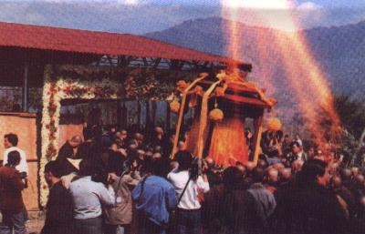
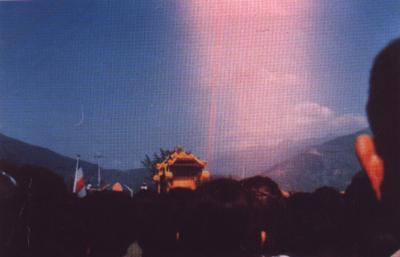

<!DOCTYPE html>
<html>
<head>
<meta http-equiv=Content-Type content="text/html; charset=utf-8">
<link rel="stylesheet" href="book.css">
<script src="../mybfnn.js"></script>
</head>

<script>
docInfo.writeDoc('廣公上人事蹟||初編（附神異篇）', `
/TEXT030C/承天禪寺編印

/TEXT030C/初編（附神異篇）　<a href="0001.htm">續編（附開示錄•行持語錄）</a>

/VOLSEP/

/TEXTC/<a href="#a00">編輯說明</a>
/TEXTC/<a href="#a01">廣欽老和尚事略</a>
/TEXTC/<a href="#a02">我與廣欽老和尚的因緣</a>
/TEXTC/<a href="#a03">我與廣欽菩薩的一段因緣</a>
/TEXTC/<a href="#a04">廣公上人與宣化長老對話錄</a>
/TEXTC/<a href="#a05">廣欽老和尚訪問記</a>
/TEXTC/<a href="#a055">無處不自在的水果法師</a>
/TEXTC/<a href="#a06">廣欽老和尚的「念佛三昧」</a>
/TEXTC/<a href="#a07">廣欽老和尚雲水記</a>
/TEXTC/<a href="#a08">廣欽老和尚如是說</a>
/TEXTC/<a href="#a09">廣欽老和尚掀起受戒熱潮</a>
/TEXTC/<a href="#a10">燈傳無盡——追懷廣欽老和尚</a>
/TEXTC/<a href="#a11">懷念善知識——嘆廣老之涅槃</a>
/TEXTC/<a href="#a12">念南無阿彌陀佛，就是「總誦」</a>
/TEXTC/<a href="#a13">神異篇——廣欽老和尚法身示現奇蹟</a>
/TEXTC/<a href="#a14">老和尚靈龕空中放光奇景</a>
/TEXTC/<a href="#a15">廣公老和尚‧舍利子靈異錄</a>

/SECTION:a00/編輯說明
/R/編者

廣公上人事蹟初編，是於民國七十五年五月初版，是在廣公圓寂後不久，蒐集報章雜誌所發表有關廣公的文章，倉卒成書，當時共印五仟冊，出書後發現錯誤太多，於再版時，已予改正。

初版出書後，不到幾個月，即迅速為人索光。故於同年九月，再版五仟冊。初版再版，均以三十二開本出書。三版即改為二十五開本。在內容方面，初版再版的文章，全部相同。再版除了改正初版文字的錯誤外，並按文章發表的時間先後編排。到第三版，方加入「廣公上人與宣化長老對話錄」，及最後的「神異篇」。在照片方面，加入承天禪寺重建前的三聖殿與廣公紀念堂等照片。又有廣公生活舊照，及圓寂前兩天的活動照片數幀。民國八十一年二月再加入「念南無阿彌陀佛，就是『總誦』」。

本事蹟初版再版三版，每版印五仟冊，出書後，均迅速為人索光。在第四版時，有人建議將前三版改正的部份，作一說明，當時因常住事務煩忙，不遑改正，故在此特予說明。

/SECTION:a01/廣欽老和尚事略

老和尚於遜清光緒十八年十月二十六日，誕生於福建省惠安縣黃姓家中。因家境清寒，其兄無錢娶妻，師四歲，父母將其賣至晉江縣城南門外李家作養子，父李樹，母林菜。師自幼即體弱多病，惟宿其慧根，隨母奉佛茹素。稍長，養父母相繼去世，所遺田地，近親覬覦之。師深感世事無常，頓萌出家之念，遂將田地分送近親，投泉州承天寺出家。

承天寺之方丈上轉下塵老和尚，命師皈依修苦行之上瑞下芳法師。瑞公即命師作外坡職事，如種菜除草等。其後由於特殊因緣，曾往南洋有年，迨返承天寺，年已三十有三，方在上瑞下芳法師座下披剃，法名照敬，字廣欽。師出家之後，專志苦修，食人所不食，為人所不為，常坐不臥，一心念佛。

民國二十二年，師謁莆田縣囊山慈壽禪寺妙義老和尚求戒，時年四十二。具戒歸來，師決志進一步潛修。遂請得上轉下塵老和尚之應允，攜帶簡單衣物及十餘斤米，前往泉州城北清源山，覓得半山岩壁石洞為安身之處。師在深山洞中坐禪念佛，米盡糧絕，即以樹薯、野果充飢，山中多猴虎，久之，人獸相處了無畏懼，遂有猿猴獻果、猛虎皈依之事，「伏虎師」之雅號乃不脛而走。

師常入定，曾一定數月，不食不動，甚或鼻息全無，眾人誤謂師已圓寂，屢請方丈準備火化。時律宗高僧弘一大師，卓錫永春普濟寺，聞之，趕至承天寺，即同方丈上轉下塵老和尚等數人上山探之，方曉師在定中，甚為讚嘆，乃彈指三下，請師出定。

凡茲歲月，已歷一十三載，民國三十四年（乙酉）師下山返承天寺，次年秋掛搭於廈門南普陀，住後山石洞禮佛。民國三十六年（丁亥）師年五十有六，於農曆六月十五日由廈門乘英航號輪船渡海來台，十六日午抵基隆，先在極樂寺、靈泉寺、最勝寺等處掛搭，七月初，復往台北芝山岩，中秋後再往新店吊橋南岸半山上之日式空屋，是時亦常往返於台北法華寺，於該寺有夜度日本鬼魂之事。

民國三十七年（戊子）春，師於新店街後山壁間鑿石洞，命名廣明岩（今之廣明寺），四十年再於右後方上側大石壁雕「阿彌陀佛」大石像，左下鑿石洞（現廣照寺內天君殿）；大佛龕總高二丈六尺，寬一丈九尺，深九尺，佛身高二丈一尺，蓮座寬八尺，深六尺，高三尺，是乃開台灣鑿石佛風氣之先。

四十年（辛卯）十一月，師聞土城三峽交界處成福山上有一天然古洞，即率徒四人，攀藤而上，果獲一大石洞，高兩丈餘，長數丈，深可兩丈。師是夜獨住洞中，洞口朝東，日月甫升，光霞入洞，故師以「日月洞」三字名之。洞頂有泉，而泉水清澈，飲之甘美可口，神清氣朗。自此師復過隱居之生活，四十一年五月始蓋洞外木屋三間，中奉「地藏菩薩」聖像。師留山三年，並於洞頂另蓋茅棚接引弟子同修。四十二年二月師又上山頂大石前搭一小棚自住。

四十四年（乙未）三月，板橋信眾在北縣土城火山購地供師，即今承天寺所在，該地原係一片竹林，人跡罕到。師等由小徑入林，砍竹約三尺見方，並將砍下之竹編為床榻，上敷細草，趺坐其上，謂隨眾曰：「坐此甚好，汝等可返。」五月間，闢地搭蓋瓦屋一間，供奉佛像。次年再回新店廣照寺。

四十七年（戊戌）年底，師復返火山。次年（己亥）又添茅棚數間。四十九年（庚子）四月，興建大雄寶殿，為紀念祖庭，命名「承天禪寺」，火山則稱「清源山」。五十一年再建三聖殿。

五十二年（癸卯），是年師七十二歲，曾應善信之請，往花蓮天祥住數月，協建祥德寺，（今天峰塔即師當時茅亭禪坐之位），旋應中部弟子請至台中龍井山上之南寮，創建廣龍寺。五十三年（甲辰），師再返土城承天寺，年底建山門，並將茅棚改建鋼筋水泥之方丈室，相繼於五十四年九月建齋堂及廚房，承天寺的初步建設，於是完成。

承天禪寺初期之磚瓦房，係匆促建成。時日既久，地基陷落，牆壁龜裂，故於民國六十五年春，開始重建。首先將三聖殿前之女眾寮房，改建成兩層鋼筋水泥樓房。次年秋，開山整地，拆除舊有之三聖殿、齋堂、廚房、大雄寶殿、男眾寮房及方丈室等。六十七年春，於大雄寶殿原址上，建三聖殿與兩層寮房，再依山坡地形，建祖師堂；於齋堂原址，復建兩層齋堂及廚房。六十八年啟建新大殿。七十二年大悲樓於新大殿右側山坡下奠基，今大悲樓結構體已近竣工。

民國五十八年，師又於土城鄉公所右後方，創建廣承岩。六十七年，該岩復建華藏塔，其後大雄寶殿、兩廂禪房、地下室、藏經閣、羅漢殿、講堂及上下樓禪房，亦陸續建成，後又翻蓋地藏殿等，完成現今之新貌。廣承岩之建築，由傳斌法師主其事。

七十一年（壬戌）九月，師又派隨侍左右十多年之弟子傳聞法師至高雄縣六龜鄉寶來村，創建「妙通寺」。迄今大雄寶殿、五觀堂、念佛堂、女眾寮房均已落成，行將供師靈骨之「靈山寶塔」亦正興建中。

七十三年七月，師移錫該寺，並於七十四年十月傳授三壇大戒，求戒之四眾弟子，多達數千，並啟建水陸大法會，廣度眾生，盛況空前。

師起居簡樸，平易謙和，縱年近百齡，行不用拄杖，不用人攙，身輕體健，動作敏捷，住則常坐不臥，並時坐於室外，或露天、或廊簷下。食則自七十八歲，改以流質。

七十四年歲末，師以看承天禪寺之大悲樓建築為名，急欲返北，農曆十二月二十五日由傳悔法師南下，二十六日迎師回承天寺，北部四眾聞訊莫不蜂擁以至，次年正月初一清晨，師召集各分院負重任之弟子及承天寺大眾，一一囑咐，並言圓寂後火化，靈骨分別供於承天寺、廣承岩、妙通寺三處。早齋後即示意欲返妙通寺，眾以師意既堅，不敢強留，即送師南下。

師抵妙通寺後，日以繼夜念佛，有時自己親打木魚並囑弟子一起念佛。初五，師瞻視清澈，定靜安詳，毫無異樣。午後二時左右，忽告眾曰「無來亦無去，沒有事」之語，並向徒眾頷首莞爾，安坐閉目。少頃，眾見師不動，趨前細察，乃知師已於念佛聲中，安然圓寂。

綜師一生，貧苦孤露，堅毅篤樸，宿慧萌芽，潛修百苦，卒致徹悟。渡海來台，冥陽兩度，禽獸馴歸，更以禪悅代替火食，歷半生歲月，其昭示修行之典範，踐履頭陀苦行之正則，誠堪與古德共讚。惜以眾生福薄，遽爾示寂。惟願不捨悲智，再駕慈航，廣度群迷，導歸淨土，共成無上菩提，不勝馨香禱祝者也。

/R/廣欽老和尚圓寂贊頌委員會
/R/中華民國七十五年二月二十八日

師駐錫承天禪寺，自民國四十四年三月起，至七十三年七月，移錫妙通寺止，前後共計三十餘年。民國七十三年春，妙通寺初建，農曆二月大悲法會後，師即去妙通寺，去前示意，每月大悲法會時，即會返山，如是每月台北高雄，兩地奔波。至五月份大悲法會，師雖回山，適逢北部有名的「六三」水災，承天路口的積水，深及腰際，車輛不能通過，參加大悲法會的信眾，只有六七個人，從此以後，承天禪寺的大悲法會，老人即不再返山了。

是年農曆七月，承天寺啟建地藏法會時，老人再返清源。可是沒有等到法會圓滿，在當月中旬，就去妙通寺了。及至十月，老人九十晉三華誕時，又回承天禪寺慶祝，在祝壽佛七中，老人向四眾弟子宣佈了來年傳戒地點，改在妙通寺。（編者補述）

/SECTION:a02/我與廣欽老和尚的因緣
/R/林覺非

/KEPAN/承天禪寺飛來塔

丙戌（民國卅五年）端午節後，余由原籍福建永春來泉（泉州府現為晉江縣）訪同學王君，告作渡台之遊，得王君贊許，並謂伊有帆船一艘，專駛泉台，惜船於日前出海，汝暫住我處，俟船回來搭往可也，余於是留住候船。

余素嗜山水，喜遊訪名勝古蹟，次晨即遊承天寺，該寺位於泉州城中，略偏東門，為泉城三大叢林（承天、開元、崇福）歷史最古之梵剎。由南大街走承天寺，即抵寺前山門，壁上有「月台倒影」四大字，內有數大石龜，經四天王殿，由青石甬道，過放生池橋，可直達大雄寶殿外之平台，在甬道旁，有兩石塔對峙，高寬（高丈許、寬僅數尺）模形均同。所異者，一塔潔淨如洗，可謂一塵不染，聞蒼蠅停息塔上，均尾朝天，絕不頭部向上。另一塔則滿堆島糞，髒穢不堪。

據傳：寺中前有一僧，專事苦工，素鮮言笑，一日忽傳京城詔至（朝代未詳）謂帝夢太后囑請福建泉州承天寺得道高僧，晉京為伊超度事。寺中當即遴選一班僧儀修德俱優者應詔前往，臨行時該苦工僧突上前請求同往，諸僧曰：「汝不諳佛事，何得同去？」苦工僧曰：「我雖不諳佛事，然可助汝等肩挑行李。」諸僧因感其平時勤謹操勞，不計苦累，遂許同行。

抵京至午門外，帝宣眾僧入朝，諸僧皆入，獨苦工僧佇立不動，帝問何故不入？曰：「地下有佛，弗敢妄跨而過也！」帝強欲之入，苦工僧則俯身以頭頂地，兩足朝天，翻筋斗而進。帝奇之，命掘地，得金剛經一部。至是帝知太后欲請得道高僧者，即此人也。遂虔誠親為厚待，帝請示超薦時應備諸事，曰：「除諸僧按照超薦儀式舉行外，可另搭一台，上供香案，中插太后魂幡。」在法書中，苦工僧突率帝登台，舉幡三搖，而誦偈曰：「我本不來，是汝偏愛，一念不生，超生天界。」帝立見太后現於雲端，向僧拜謝，冉冉上昇。

法事畢，諸僧辭歸，帝獨留苦工僧，並親自侍遊於御花園及京都諸名勝。一日行經一石塔旁，僧忽止步凝視石塔。帝問：「師愛此塔乎？朕當命工拆下運送師處。」僧曰：「陛下如肯相送，衲自取回。」言罷以袖一拂，塔竟收藏袖中，遂即向帝合十辭謝而去，帝命人追送，已無蹤影。回抵承天寺，諸僧尚在途中。諸僧抵寺後，其中有人識謂苦工僧曰：「汝既超度太后，帝當厚賜於汝，可否分沾大眾？」苦工僧曰：「有之，第恐大家拿不動耳。」即從袖中倒出此塔，豎於甬道旁，故名「飛來塔」。後人雇工重建同樣一塔與對。不久該苦工僧即離去。

又一傳：福建漳州南山寺，有一龍褲祖師者，其行蹟與上述同，唯偕帝遊時，祖師輒注視帝之龍袍，帝問：「師愛此袍否？」師即拈褲笑曰：「褲破矣！」帝隨脫龍袍，命工改製師褲奉送，師穿褲辭歸，故得名「龍褲祖師」。是否龍褲祖師即係承天寺之苦工僧，未得詳查，弗敢妄斷。

/KEPAN/初見廣師宿緣深

大雄寶殿正面有三門，中門上懸一豎匾，兩邊雕龍，中有「敕賜承天禪寺」等金字。左邊大門內，即師趺坐處也，右邊大門內，有一老僧專司大殿香燭。余見師垂目趺坐，忽憶古小說中，常有禪師之稱，惟迄未見過坐禪真相，今見師坐，內心頓生無限歡喜與崇敬，有甚於突獲至寶之感。然不敢妄加驚動，只得在旁靜候。嗣有一小沙彌從內呼師名，告以奉庫頭師命分錢與師，略談數語即去。余乘機向師鞠躬一禮（時尚不懂合十）向前請示。師問：「汝何方人？來此何事？」余將原籍居處及暫住友處候舟渡台事詳告，師聞及此止問而云：「汝鮮來此，寺中地方甚廣，可到各殿參觀。」余當即進入大殿，略為一轉，回視師又靜坐矣！然余對師之心向，如受不可言喻之吸力所吸引，全部遊興均集中於師身上，似有半步不肯與離者。旋又一僧與師談話，余得再次近師，時師似有厭煩，即謂：「汝既是永春來者，寺中有一老僧，是汝鄰縣（德化）秀才，汝是讀書人，我帶汝進去見他，也可聆他談談佛法，增長智慧。」言罷立即下座，帶余入內。至客堂，為余簡介於老秀才僧（老秀才俗姓賴，家甚富有，兒孫滿堂，出家已二十餘年，其弟亦一飽學之士，與余有數面之交），稍敘寒喧，師已回大殿。時老秀才已近古稀之齡，談笑間，滿口只剩一、二長牙，曾出寺中所印之金剛經、彌陀經、觀世音菩薩普門品等法寶相贈，並概為宣說。余心不在焉，唯唯聆受略與坐談，即與辭離，並將經請回。出至大殿，又至師側，伺機糾纏，然師惟勉為應付而已，至日午，余始離寺。

午後再遊開元寺（泉城最大寶剎），重瞻東西塔（在開元寺左右分列兩旁，東西對峙，塔高據泉州府誌載為二十一丈餘，以青石砌成，分八面五層，每層每面正中均雕有不同佛像一尊，塔尖相傳為七寶銅所製，落日斜照，尚金光燦爛，誠一偉大建築物也）。次晨又至承天寺，師仍坐大殿左門，見余至，笑顏相迎，情況迥異昨日。師大開話匣，告余曰：「汝欲去台，可也！亦須汝去，惟汝去後，要與我來信。台灣佛教受日本神教影響，已是僧俗不分，我與台灣有緣，將渡台建道場度眾生，以我此身，為修佛範，以挽佛教狂瀾，重歸正軌，此乃吾願，汝須謹記。汝抵台後，尚有一段苦嘗，恐汝不堪忍受。」余答：「台灣如我當去，萬苦莫辭，自願樂受。」師嘆曰：「汝宿業深重，非經苦磨，無由消除，汝既願受，儘可前往，古云：『有苦自有甜』，望汝遇極苦時，莫退初衷。」余答：「絕無退悔！」即決意拜師，師亦喜諾，謂確有師徒之緣。然其時余唯知一心恭謹，以師禮待師而已，全然不知求皈依之法。

/KEPAN/偕師共遊碧霄岩

從此，除回友處寢食外，餘均隨侍師側，夜必亥後始歸。經旬日，師忽談及在山苦修事，余好奇念生，問師修處途徑，師云：「汝欲去乎？明早吾與汝同往。」

翌晨，天將拂曉，余即至寺，師已先下座，候於殿外平台矣！頭戴草笠，背一地水火風之布袋，手拄一杖即出寺。出泉州北門，經小街，兩旁店舖老少均喊：「廣欽師！您又上山耶！」師曰：「吾帶客遊耳，不住山也！」街上眾人皆云：「此位伏虎和尚，離開此地，實為可惜。」

行數十步，師欲跣足上山，余亦隨之脫鞋，由師寄放一理髮店內，師再至一小舖，買麵與青菜，為余準備午餐，置於布袋內，不讓余帶。如是出北門，拾級登上清源山（泉州府後山），先至彌陀岩，再轉碧霄岩，岩在半山右，岩右有一正豎石壁，高可丈許，外掛一大石，中空成一小洞，洞內寬約五尺，高六、七尺，兩邊各成天然小門，均可通行，惟左門稍寬（約三尺），最高處，余進入時適可直行。右門寬僅尺許，高則不滿四尺，出入要俯身始過。洞中有尺許見方之破舊板椅，四週略可通人，此即師面壁十二年（民國二十三年癸酉四十二歲至三十四年己酉五十四歲）之處所也。洞外餘地不大，有師手植果樹及花數棵。

碧霄岩聞為前人所建，早成廢墟，師在洞中入定數月，遠近馳聞，後一歸僑上山謁師，始捐資重建。岩只一進，佔地不滿十坪，石牆瓦頂，左右兩門，中一大窗，室內空無一物，亦僅一破舊方板椅耳，師嘆告余曰：「吾將下山時，有一齋姑，要求進住於此，待吾下山，她卻不肯住下去，任令荒廢，出家人不堪茹苦，可惜！可憐！」

再順右邊石級登數十步，至瑞藏岩，師告：「此岩原為吾法師父宏仁老人念佛之所，老人升西，岩亦空矣！」再往上登至一小廟（係雜神廟），住有廟祝一人，師即取出麵菜，請其代余作餐。師則自袋中取出水果為餐。

餐後略事休息，即從山右尋路歸，經一仙洞，內供仙像一尊，已久缺香煙。再下有齋堂兩所，相距不遠，堂中齋姑皆以布巾包頭，在園地耕作，堂內僅一、二老齋姑留守作炊。該齋堂係承天寺之派下，老齋姑與師熟，乃入內喝茶，時日已西斜，諸齋姑適於園中收工回來準備晚課，師亦辭謝下山。至平地，順遊泉州府之城隍廟，廟後一院，為泉城士紳葉青眼老先生所創辦之養老院，前弘一大師來泉時，即駐鍚於此（後弘一大師圓寂於泉，其骨灰現供於承天寺功德堂，骨灰盒約七、八立方寸，裹以黃綾，外書弘一法師靈骨）。時天色已晚，匆匆轉道北門，取穿寄鞋，即回承天寺。

/KEPAN/颱風助結師徒緣

余因久候友船未回，急於去台，自向船行（即船公司）購票，六月十七日，船行通知晚間九點上船。余向師辭行，臨別時，師曰：「如未去時，可再來談。」余聞師語，知話中有話，自思此次恐難成行，然船行既已通知，亦只好上船，一試究竟。

午夜十一時，船由南門外新橋碼頭解纜，慢慢由泉州灣出港，是夜月如明鏡，碧天無雲。船中除七、八船工外，乘客共三十六人，均入艙睡，惟余一人獨坐於桅杆下之舺板上，藉月光開閱經本（由承天寺請出）。

翌晨，天將拂曉，船甫出港口，船頭兩年輕船工，於船邊抽出竹竿，往港中一插，告船後把舵老者：「一丈二」再一插曰：「八尺矣！」時船底忽有響聲，如遇觸物，船身右傾，已潮退擱淺矣。船員急跳下持棍抵住傾船。天明後，乘客紛紛跳下沙灘，小孩竟得於沙灘上挖捕螺蚌。十時許，潮見漲，老舵工命作飯飽餐，準備十二時掛帆出海。

正午，大帆業已掛上，老舵工翹首細察天氣，忽喊：「台灣有颱風，今天不能出海矣！」即命收帆，重駛入港。回至一鎮（惠安秀塗）暫息，至三時許，老舵工又謂：「風候恐能延至數日，為應乘客之便，船須駛回泉州。」晚七時許，船仍駛回原處。

余下船後，即直奔承天寺告師，師已站立於殿外平台上，見余至，哈哈笑謂余曰：「我知汝將再回，你我師徒緣尚未結，何可行也！」師即擇次日（六月十九日）於大殿後之觀音殿為余皈依。

十九日晨，余虔備香燭果品，供陳觀世音菩薩像前，師教禮佛已，即為余說三皈依，完成皈依儀禮（皈依者，余為第三人）。事畢，余問：「弟子去台心切，不知何時成行？」師曰：「風可息矣！二十晚當得上船，二十一日出海，二十二日即可抵台。」

二十日午後，果得船行通知當晚上船。七時許，余向師辭行，師再三叮囑：「汝須來信聯絡！」余答：「謹遵師命。」臨行師連囑「順風」數句，余拜謝出寺，滿心歡喜，知此次定可赴台矣！深夜十一時開船，月光皎潔，余則獨坐舺板上閱經。

二十一日晨船抵港口，舵工靠岸至其家（海濱）再裝貨品，正午十二時懸帆出海，是日風平浪靜，烈日高張，舟行海上，一起一伏，朝台順航。至夜余仍坐桅下閱經，月色朗照，水天相連，偶感宇宙之寬大，此舟之渺小，而傷旅途之茫茫，人生之幻幻。

二十二日初曉，台灣已隱約可見。午前十時，已抵中部公司寮（海線龍港站）矣。老舵工嚷曰：「我家數代公司舵，航行泉台，如獲順風二十四小時可到，最速者，亦需二十三小時，於我一生航海中只得數次而已。獨此次航行二十二小時，誠然出人意料之外，亦聞所未聞也！」余感佛力之無邊，師恩之加被，對師之崇敬益篤。

上岸後，即搭北上火車，直抵台北，住家叔寓，即修書稟師，不數日獲師回諭，師仍在承天。余旋即參加台省國民學校國語教師考試，錄取後，經兩週講習，被派嘉義民族國校服務，余又作稟，師覆將往廈門南普陀寺。冬間，連奉兩函均未獲覆。卅六年（丁亥）春，余轉職台北鐵路黨部，再去函稟師，亦未奉覆。四月間，忽奉師諭，決欲來台，尚缺旅費，余即急匯船資。

師於是年農曆五月十五日下午安抵基港登陸。師到台後廣度無邊眾生事，在此無庸多贅。念師恩未報，寢食難安，敢將承師攜度之一段因緣，謹紀為念。

/SECTION:a03/我與廣欽菩薩的一段因緣
/R/周宣德

盡形壽九十五年，念佛度眾從未斷，而今捨報，往生極樂淨土，咸盼慈航倒駕，再續前緣！舉世讚頌的高僧廣欽老和尚，不食人間煙火，夜不倒單，一心念佛，數十年如一日，由此而得神通妙用，度化了無數眾生。他與我因緣很深，所知他的事蹟也不少，現因講話時間限制，只能選出三個實例和他在修為上的六項提綱，來證明他是乘願再來的菩薩！

/KEPAN/一、超度亡靈，保寺安寧

民國三十九年，我住台北萬華昆明街台糖宿舍，時常到附近的法華寺禮佛，與寺裡的齋姑認識。她說她原來是該寺信眾代表，自日人住持回國以後，就將該寺給她負責接管。她邀我每星期天去參加法會並為信眾講經，共進午齋。她說那寺內晚間無人敢住宿，因為深夜有鬼自動打開房門、窗戶，並且開關電燈⋯⋯，種種擾亂動作，使人身心悚然，夜不成眠。每天在傍晚七時日落後，大家必須離寺另住別處。我聽到這些話，總覺得鬼怪為禍應設法對治，心中不免悒悒。有一天午後，我忽然遇到一位身材不高的老和尚路過西寧南路，慢步向南走，距離法華寺不遠，就趨前向他合十為禮，請問尊號，他回答說：「廣欽。」又問他住在何處，他說：「沒有一定。」我看他步伐輕飄，目光炯炯，似有道行，就勸他一同進入法華寺休息。他到寺內首先禮佛，然後走到佛龕左側向西的地板上，跏趺而坐。當時齋姑亟欲為他準備晚餐，他說：「我不吃飯，只吃水果。」於是我就跑出寺外買了一些香蕉，放在他座前一張小桌上，任他自取進用。到了天近黃昏時，我暗示齋始們大家離寺，留他過夜，且看他如何應付鬼道來擾。

第二天早晨我們去法華寺，廣公老和尚用手指殿前右側一客房說：「那兒有兩個日本鬼，你們去翻開榻榻米，取出屍骨，讓我給他們超度。」果然如他所說，齋姑們找到了兩具骷髏，老和尚叫齋姑把它放進寺前焚化冥紙錢的爐裡燃燒掉，他口中一面念佛號，又像是念往生咒，之後便回大殿裡說：「已經超度過了。」但當晚齋姑們仍不敢住進寺內。第三天早晨老和尚仍坐原處，又說右側後面寮房還有一個鬼，囑令如前掀開榻榻米，又發現了一髏骸，送入化紙爐，老和尚念佛持咒後說道：「他也走了！」第四天早晨，我又去法華寺，齋姑告訴我：「師父叫我們今晚可以來寺內方丈寮安住。」從此齋姑就放心地邀同數位信徒大膽地住進寺內，果然無事，一切清淨了。於是我告訴齋姑說：「你們應當拜請他為本寺住持，留他常住，確保安寧。」

我在每天下班後幾乎每晚都到法華寺，請教他修行的經過，知道他在泉州山洞駐錫之初，以至來台經過等種種奇蹟，想已有很多人知道，將有寫作，這裡就不再贅言了。他這生雖沒有讀很多經典，只是經由苦行念佛而開悟，當因多生修持，才能具足這種神通！

/KEPAN/二、晝夜念佛，一心不亂

我在親近他的初期，總覺得他沒有多研佛典怎能有此神通？屢次請教他修行的方法。他總是回答說：「你只要淨念佛號，久後達到一心不亂，自然會有感應。」但是我沒聽到他口出聲音，總覺莫測高深。所以我就在一個週末假期的晚上，特地到寺拜見他老人家，他正在佛殿中間日本式的一個矮圓桌上，盤腿而坐。我就在他旁邊不遠的椅上也坐下來，在黑夜中撥開電燈，專心侍候他，每隔一小時或四、五十分鐘，此輕步走向他的座側，細聲向他問道：「你在做什麼？」他答：「念佛！」又問他：「念那尊佛？」他答：「阿彌陀佛！」如此七、八次都是如是問，如是答。我一夜沒睡，直熬到第二天早上，我再問他：「您老總說是念佛，可是沒有口動出聲，究竟怎樣念法？」他說：「念佛重在『心念』、『專精』且晝夜不間斷、不雜亂；但是你們能口念、耳聽、心想就是下手功夫，慢慢自然就會做到不分晝夜，一心念佛不亂。由於念佛得定而發慧，必有成就。」

/KEPAN/三、預示信眾，各安其業

我的一位皈依師父智光老和尚，遇到一位東吳大學李杏屯教授到華嚴蓮社，向他提出佛學與心理學的問題，師父不與多說，只寫了一張名片介紹他來我家談話。在我和他討論後，知道他頗有善根，就介紹他去請教廣公老和尚。他一見面，就被廣公的道行攝化，而自動地皈依三寶。他本來已經與美國夏威夷大學商訂好了合同，將聘為教授，而且該校美籍系主任不久將來台接見他，而面送聘書。所以就向老和尚問：「我去美國會成功嗎？」他答：「這時不行。」又數日後，一位中興大學農學院湯之屏教授，也經智公老和尚介紹來和我討論佛法。據他說，家計困難，煩惱很多，急求解決經濟問題，佛教有何辦法？我也介紹他去見廣公和尚。湯兄見到和尚問道：「我有很多煩惱，怎樣解決？」老和尚說：「你可出國多賺點錢，生活就安定了。」此後李、湯二位教授，相約來到我家，李兄先說他已有出國的把握，師父說「不行」，而湯兄說我並沒有出國計畫，他卻說「可以」，都認為和尚的話很難令人相信。我回答說：「廣公有預知他人未來事情的神通。我建議湯兄不妨去試試尋找出國的機緣，而李兄且看系主任來台接見後的結果。」時隔不到一個多月的光景，李兄在系主任的接見後，系主任僅說要回檀島與校長商量後才能寄發聘書，從此沒有消息。而湯兄則回校查閱加拿大農業雜誌，巧見招聘農技人才的廣告，湯兄隨即去函申請，果然溫哥華農場的聘書連同他們全家的機票一併寄台，而去就業，從此他們家庭生活大為改善。

/KEPAN/四、修為六大提綱

這些只是預知他人未來的事而已，此外，還有許多的事蹟，在此不能盡述。但依我由觀察而歸納他的修為，可簡列為六項提綱：

一、心想憶念阿彌陀佛。
二、開口說話必利於人。
三、舉止行動無不在定慧中。
四、持戒嚴謹遠超凡夫。
五、視名利為空無。
六、度眾咸令解縛。

從以上這些事實可以證知他是乘願再來的菩薩呵！

我接到台北慧炬同仁長途電話說：「廣公菩薩宣稱今年二月八日將緣盡離此世間，經大眾再三懇留，才慈允延遲五天，於二月十三日午後，果然在妙通寺大雄寶殿中，由大眾圍繞齊聲念佛聲中而坐化了，世壽高達九十有五。眾議並將於三月六日荼毘。」我聽到這一消息，不禁為眾生福薄痛失導師而惋惜、悲泣！恰巧這兒，正逢到二月二十三日美國洛城蒙市法印寺舉行週日念佛會，住持印海大法師囑咐我主講，我就便在這兒向諸位簡單地報告，也祝願廣公菩薩暫住常寂光土，親近阿彌陀佛，然後再來這個濁染世間，淨化眾生身心，同登安養，共成佛道。

/SECTION:a04/廣公上人與宣化長老對話錄
/R/江啟超筆錄

（編者按：民國六十三年農曆正月十四日，宣化長老來承天禪寺拜訪廣公上人。對話錄中的老和尚係指廣公上人，大法師係指宣化長老。）

老和尚問：坐是什麼意思？

大法師答：無意思！

老和尚問：無意思，是不是像一塊石頭？

大法師答：有意思也是石頭，應無所住而生其心，故無意思，無智亦無得！

老和尚說：不顧惜身體！

大法師說：因為無人、我、眾生、壽者等相，凡所有相，皆是虛妄，若見諸相非相，即見如來；所以我見如來，如來無所來，亦無所去，故不可去。

老和尚說：這是菩薩所說的，但是我們還有肉體。

大法師說：不執著即是菩薩。

老和尚說：執著才是菩薩。

大法師說：一切皆是幻化，所行無事。

老和尚問：但是說者是誰？

大法師說：說者是說者那個人，吃飯是吃飯那個人！

老和尚說：吃不飽，心不願！

大法師說：吃不飽，因沒吃；吃一定要吃飽！

老和尚問：貪者是那個人？

大法師說：貪者是貪那個人，貪者也是佛！

老和尚說：說者有理！

大法師說：如無理者，我在美國，美國人不會服從我！

（問答到此時候，度輪大法師就對其美籍弟子們指導）

大法師對門徒道：你們有什麼問題可請教老和尚吧！

門徒點頭答：我們想不出什麼問題可請教！

老和尚即時向美國門徒們說：你們不用口問，只用眼睛看看就知道！

大法師說：不用眼看亦可知道，我在美國尚未來此的時候，早就知道，你是老修行家！

老和尚說：不是！不是！我時常感覺這件假殼子仍是不自在。

大法師說：自在不自在總是不管他！

老和尚說：不管他也會痛苦！

大法師說：應無所住而生其心！你要顧身體！

老和尚說：要顧也顧不來啊！

大法師說：不顧也得顧！

老和尚說：無所住！

大法師說：顧也是無所住！

/SECTION:a05/廣欽老和尚訪問記
/R/章克範

/C/——民國64年7月1日海潮音——

/KEPAN/名山禪窟禮謁高僧

又一次禮謁了素所崇仰的清淨僧——台北縣土城鄉清源山上承天禪寺中的廣欽老和尚。

這位現年八四高齡的老僧，曾以禪定功夫，不食煙火，只吃水果，故有「果子和尚」之雅號。如今，為了接引遠來的香客、遊客、洋客和滿懷狐疑意存問難的閒客，方便開示之餘，也會偶而啜上幾口薄溥的麥片湯。他的精神好極，眸子清明，聽覺聰穎，步履安詳，氣韻生動，比往昔任何一次所見都好。他說已經三年未下山，但也不準備講經。

安坐在地藏殿中不求聞達的廣欽長老，他的盛名，卻默默地正在韓國、美國、歐洲迅速傳佈，也在國內年輕的學子群中傳佈，因為他告訴他們：「佛法並未衰微，人心確在衰微。」

向來不問俗事只談修持的高僧，這次卻意外地以非常親切的笑容來歡迎我們，並破例地與我們大談僧事，使我們受寵若驚，猛然想起，這不是他一生行持的寫照嗎？對！這真是他吐屬平凡寓意深切的箴言！

/KEPAN/山花含笑鳥語迎人

三月九日清早，天色灰濛濛的，雖無雨意，也不見得會放晴，是個乍暖還寒的星期日，本想在家沏杯好茶，讀些佛經，忽然記起昨晚曾與任教三軍大學的丁肇強居士有約，要去土城承天禪寺瞻禮廣欽老和尚，遂匆匆用過早點，向車站絕塵而去。

到了公路西站，黑壓壓一片人潮，去登山的、郊遊的、賞花的、釣魚的，擠得水洩不通，好容易在人叢中找到他，竟是西裝畢挺，披掛齊全，如赴盛宴模樣，原來他是初度晉謁，堅持一定恭敬誠信，不但事先沐浴，換著新裝，也不雜飲食，拒進早點，使我慚愧不如。登上公車，居然那麼湊巧，不但天氣回暖，太陽也張著笑靨，從厚厚的雲層裡鑽出來了。

車到土城，徒步登山，山道幽靜，鳥語迎人，花吐清香，樹發新綠，使人俗慮頓消。到了半山亭，每隔數十公尺，路旁就有一塊信眾捐建的石碑，碑上刻著佛、菩薩的聖號，朝山的男女，已絡繹於途，各懷虔誠，徐步向前，使我想起三十多年前參禮古剎的境況，頗有幾分相似，所不同的只是此山開闢未久，少了幾棵合圍的古私，松濤清響無從領受罷了！

進入禪寺，山花含笑，林木蒼翠，高僧住處，畢竟又有一番風光。先在大雄寶殿禮過佛，驀直向地藏殿行去，安坐在門口的老和尚，老遠就向我們招呼，慈祥親切，如迎遠歸遊子，其發自內心的愉悅，為歷來所僅見。

/KEPAN/古佛風範不可忘記

他把我們讓進殿左的沙發椅上坐定，愉快地為我們說開示，從山居的近況說到弘法利生的規範，整整為我們說了一個小時。

他說：「近年來經常有韓國、美國以及歐洲的學人或僧侶上山來參究佛法，他們既懷著誠心，也懷著疑心，經過簡單的說明，莫不皆大歡喜，輕鬆愉快地回去。還有國內年輕的大、中學生們、老師們，信佛的虔誠，見解的深刻，也令人歡喜，這都是值得欣慰的事。他們無論用語言或文字，直接或間接去宣揚佛法，對社會都會發生良好的影響。」

敘過家常，話鋒一轉，他就對現在的僧團有了感觸。他說：「社會環境在變，僧團的環境也在變。從前我們在叢林裡的作法和現在的出家人的作法就大有差別。從前的出家人比較重視佛法，成天在行、住、坐、臥中辦道，現在為環境所迫而出家的人多，因此，為自己的利益而奔忙的人也多，真正為佛法弘布而盡心的人就少了。」

接著，他就說明理由。他說：「佛法是出世間法，與世法畢竟有別，過去佛的風範猶在，我們不可忘記。遺憾的是現在的出家眾不自覺地將政治也帶到佛法中來，以觀光、出售佛的雕像、塑像、畫像來弘揚佛法，這樣向工商業社會看齊的做法，就戒律來說是有抵觸的，就是『不如法』。」

/KEPAN/戒律主要戒自己

於是，他以叢林規矩來作證，加強他的論點。他說：「叢林規矩，不論你是學禪、學淨，還是學天台、學法相，都講老實修行。現在大家多為生活忙，修行只是應應景而已。難道會看經、會穿袈裟就成了僧寶？也有人拿起筆來能夠寫寫，也歸不到佛法這一邊去，說起來也是遺憾！」他又感喟地指出：「從前的叢林，以救濟災荒與施捨窮困來與社會結緣，消滅苦難；今天台灣各道場的做法恰恰相反，大家儘在比賽誰個的齋飯做得好，以拉攏社會上有錢和有地位的人，這樣成天在聲色貨利裡打轉，與佛法的距離就遠了！」

談到僧眾與居士之間的關係，老和尚謙稱僧團做得太少，沒有產生領導作用。他舉了兩個例：第一個說法師們沒有切實地去和居士們說明佛教的佛、菩薩與道教的神祇有什麼不同，到了今天，無論在城市或鄉村，土地公、城隍爺、文昌帝君、關公、媽祖、趙公明、呂純陽等，與佛菩薩供在一起的寺廟還多的是，實在不應該。其次說到戒律，出家人也多未深究。他說：「戒律主要在戒自己，不是光教人做，自己不做。」

/KEPAN/佛法未衰興衰由心

講到這裡，他才鄭重地將國內外許多人問過他的這個重大問題的答案說出來：「佛法並未衰微，人心確在衰微！」他接著說明：「因為人心衰，所以社會風氣亂，道德水準墮落，佛法自然不興了。無世間法就無佛法，要佛法興盛，就應該在人心上做工夫。」於是，他莊重地念出三句人人皆知的老話：「人身難得！佛法難聞！中國難生！」但是這三句話從他口中說出來，就有千鈞之力，震得我們在座人的耳膜都嗡嗡作響！

接著，他為這三句話打個淺近的譬喻來作解釋。他說：「現在的讀書人，作興到國外去留學，特別是到美國和歐洲去。這些西方國家，就是不重視倫理道德，只講求科學技術，儘管技術學好了，還是皮毛，做人的道理沒有學，縱然一個個都得了博士學位回來，於國家、於社會，嚴格說起來，並無多大用處！」

/KEPAN/夢在六道不出娑婆

老和尚甚至將世界的禍亂與紛擾，也歸咎到西方人的無知上去。他說：「他們（指西方人）以物質文明點綴了花花世界，卻又以不能明禮尚義而使世界發生動亂，引生災難！」因此，他說：「西方人不容易了解『人身難得』這句話的道理，自然對『眾生（水陸四生胎卵濕化，九類蠢動，一切含靈）皆有佛性』更無從體會了。我們的身體會壞，佛性卻不會壞；眾生雖有佛性，卻天天在做夢，連吃三餐還是在做夢。夢在六道輪迴，不出娑婆。要出娑婆，就須有緣得聞佛法，並照著它的道理去做。」

他說：「社會並不是照佛法組織起來的，但是娑婆世界嚮往佛法。因此，獻身佛法的出家人，不可自己被社會染污，應該以自己的行願去淨化社會。出家人是為捨名利而出家，現在竟也有人在為名利而明爭暗鬥，真有失出家人的本分！不從苦入道，不忍辱精進，竟跟社會上的人一樣去搞派系，試問：這樣怎麼成得了人天師表？！」

/KEPAN/由苦入道行願相繼

一陣感嘆的話說過，他又把話題轉到過去佛、菩薩的修持上來。他說：「過去的佛、菩薩都是苦修的，有的修幾生，有的修幾多劫，生活淡泊，不妄造作，所以能開悟，了生死。現在的人多不想吃苦，也不相信佛、菩薩為佛法而捨命的道理，因此入道很難！」他說：「過去的佛、菩薩，各各願力不同，如阿彌陀佛有四十八願，藥師佛有十二大願⋯⋯，修行人應該效法佛、菩薩，每人至少發一個願，永持勿失，直到成佛而後已。但這是弘法度眾的願，圓證佛果的願，不是要你把廟子蓋得大一點，住得舒服一點，如果這樣發願，真是太可憐了！」

他慈悲地指出：「現在的世間上，的確有這樣的出家人，他們只圖把自己的廟子建得大，自己的信徒聚得多，好在人前稱能！他不許信徒敬信別家寺廟的佛，只信他廟內的佛，只許信他一人，也不許信徒尊敬其他的出家人。像這般貢高我慢妄自尊大的人，還不是在名利圈圈中打滾，同平常的在家人一樣，在苦惱中過日子啊？！」

上山的信眾與遊客越來越多，有的憩在殿內，有的站在殿外，老和尚看他們一雙雙帶有祈求的眼光，知道還有許多問題待理，纔以堅定的語氣作結論：「佛法未衰，而是人衰！」接著，以鼓舞和嘉許的神情告訴大家：「在家居士近年來在護法上的成就頗能盡力，但是，還要精進，不可滿足。只要真心學佛，不問在家出家，都可成佛。」

/KEPAN/叢林修持不在言說

廣欽老和尚的談話，如江河傾瀉，開口以後，就插不上嘴，只有道一師的口譯，不斷傳述。真奇怪，往常聽開示，多半靠譯人，這回忽然耳根靈光起來，幾乎可聽到七成左右，句句發自肺腑，切中時弊，令人感激莫名。但是他到底未曾談到宗門的修法，而這正是年輕的學佛人所想知道的，於是我以恭敬懇切之心，請他說一說「時下修禪，是否禪、淨雙修最為逗機？」

他說：「禪非關色相，非關話頭（參話頭是參佛），不在講說，不在弄神，只求入定，能定就有禪。近百年來，學禪人多從念佛打基礎，這確是一條路，但並不是只有這一條路，因此我不勸大家也走這一條路。」

禮謝出來，到齋堂用過午膳，就與丁兄折往後山的日月洞去，這是當年廣欽老和尚的住處，現在傳良法師在那兒安單，修持平實，接眾謙和，是一個難得的龍象。回程路上，想起寺內清淡的齋供，大眾安和的行止，高僧悠然的慈顏，山野寧靜的幽風，誰說我們國內沒有禪呢？！

/SECTION:a055/無處不自在的水果法師

四月九日下午一時，一行人又從台北出發，約經個把鐘頭，車行到土城鄉，轉爬彎曲的山路，汽車一檔的吼聲，聲嘶力竭得令人聽了真想下來步行。一個大彎後眼前一亮，承天寺已遙遙在望，大家開始指指點點，談論著自己來過此地的歷史。到了寺前，只見一大片新墾的黃泥地，原來是承天寺正重建中，在山邊上臨時搭的鐵皮屋裡，供奉著三尊佛，二條長凳，幾張藤椅，佈置簡單而清爽。

屋裡大藤椅上，一位老法師雙手合抱，意態安詳地坐在那裡，看到我們進來，面露微笑，點了點頭，令人頗覺親切，他就是人人稱道的水果師——廣欽老法師。

大家到佛前禮座後，他要大家自己找椅子坐下。藍老師首先說道：「我們是佛光山中國佛教研究院研究部的學生，今天特來參訪，請師父給我們開示。」

「我覺得一個新出家的人，應修一段苦行，也就是要粗衣淡飯、勤勞作務，不管是揀柴火、挑水、種菜、煮飯等，你都要做，多做苦工，智慧就易開。一個初入門的人，要把心安住，最好的辦法是一心念阿彌陀佛。」

老法師指著他的弟子並且說：「我平時教他們也是一心念南無阿彌陀佛。」

依嚴法師問道：「請問法師，修苦行是指做什麼事情，才算修苦行呢？」

老法師答道：「一切都不計較，日常生活中不起分別心，就是修苦行。」大家覺得老法師答得很特別。

慧根師接著問：「請問老法師，對研究教理有何看法？」

答：「沒有什麼看法，我覺得很自然，你們以研究教理弘法，我以修行弘法，一樣嘛！」

從智法師問：「請問老法師，你過去修行、閉關，遇到不順利的時候，你如何對付？」

答：「要有信心——在自心深處要有一依止。」

又問：「閉關時，在吃的方面，是否要愈吃愈少呢？」

答：「不是的，要順其自然，也就是要正常。要無所掛礙，要無我才是閉關，如有『我』、『吃多少』的觀念，那就不是修行，而是執著了。」

又問：「我閉關時，有時是不想吃，所以不吃。」

答：「故意不吃，火氣會上升，不能修行，不想吃的念頭起來了，那還是執著，不想吃，是有一個你不想吃。」

又問：「有時不吃，反而覺得很輕鬆安適？」

答：「那只能輕鬆幾天，是暫時的現象。因為我們還未到一心不亂、一念不起的境界，所以，執意不吃，身體會虛弱下來。」一連串的問答，大家都在回想剛剛講過的話，忽然慧智師開腔。

問：「聽說老法師是吃水果度日⋯⋯」話未說完法師就答說：「現在沒有吃水果，在民國卅六年（時法師五十五歲），我從大陸來到台灣，在山中修行，就從五十五歲開始到八十四歲，這中間都是吃水果，現在是方便，吃素食。」

又問：「請問法師為何會動念頭要吃水果呢？」

答：「因為在山上沒有東西吃，當然只有吃水果。」大家聽了哄堂大笑，他的答話，完全出乎意料，「我不是故意要去吃水果，有時沒有水果，喝水也是過了一天。」

從智法師問：「聽說老法師當初是在山上迷路途，找不到東西吃，才吃水果的？」

答：「對的，山上沒東西吃，又沒有天人來供養，只好找野果子來充飢。」

慧淨師問：「光吃水果，身體能否支持得住？」

答：「支持不住也要撐，有水果吃就不錯了，那裡還想得到支持得住或支持不住。」老法師做了一個表情引得大家又是哄然大笑。

藍老師問：「您是否還每天坐禪？」

答：「我方便，現在每一項都有喔！包括吃飽睡覺，睡好了在竹椅上坐坐，想睡就睡、想吃就吃，無處不自在！」法師讓人覺得風趣、親切！

慧嵩師問：「打坐要從何學起？」

答：「從觀自在學起。」又是一個特別的答覆。

又問：「您是否走禪宗路子？」

答：「不是，我偏淨土，念南無阿彌陀佛。」

慧明師問：「請問老法師，念佛有何竅門？」

答：「無有一竅，但看己心。有的人不會念佛，要壽命長，求壽命長有何用？只是多一些時間去造業。會念佛的人，心與佛同，多一年壽命，就多一年的無量壽佛。」

慧根師問：「弘揚佛法，在現在這個時代，應以何種方式較為中肯？」

答：「唉！剛剛講過了，你們是以讀書弘法，我是以念佛弘法，都須要。」

從智法師問：「聽說這裡要重建大殿？」

答：「信徒們發心要建，就給他們建，我沒有掛礙，我不會高興，也不會嫌煩。」沈默了一會兒。

有人問：「開始打坐時，妄念很多，如何對治？」

答：「妄念多，就是業障。去妄念，念佛較易。另外俗緣要少，也很重要。」

藍老師問：「有一種人信外道，但做人很好，請問他將來會到那一界？」

答：「這是你們的分別心，我的看法是看每一個人都一樣，每一種宗教都有它某種程度的好處，都對社會有某種程度的利益。這不是你好、我不好的問題，而是層次上的問題。」

接著老法師反問：「度眾生如何度？」這突來的一問，大家在心中來不及想好答案。他乃自代答：「這個『度眾生』真不容易，我們把慈悲心發出去，他要肯接受，才會受我們度，他不接受，就無法度，所以一切要自自然然的，要他看到我們歡喜。度眾生要隨緣而化、慈悲為懷，度眾生是順其自然的，所以這個『緣』就很重要了。」

慧智師問：「請問老法師對了生死的看法？」

答：「了生死？喔！那談何容易！不過，了生死有比較容易的辦法，就是念佛啊，但不要以為念佛容易！一念疏忽，就會想睡的（昏沈）。」

有人問：「如念佛念到想睡時，怎麼辦？」

答：「想睡就睡呀！」

蔡月秀問：「有的人念佛要了生死，但有的菩薩要乘願再來，您對這二種人的看法有何不同？」

答：「我的想法是，各人的願力不同。我請問：你們讀書是否有一樣的願呢？」老法師很靈巧地回答了這個問題。

藍老師問：「修行到某種程度以後，對於往生西方是否能夠自己知道？」

答：「只有到臨死時才知。人人都可成佛，只是業感不同，故有早晚不同，人身難得，要努力修行。地獄、畜生，都是自己要去的，成佛作祖也是自己作的。要成佛，一定要經過人這一大劫，要把握機會，好好修行。」

依廣師問：「念佛號是否也是執著？」

答：「執持名號不是執著，因執持佛號，可得正念。如有一點散心或名利之心，那就是執著。」

又問：「一直要念佛，一直要念，是不是執著？」

答：「這也不是執著，是精進。」

慧明師問：「有人說，念佛會著魔，請問這是為什麼？」

答：「這是你有此念頭，才會著魔，你心不專，才會著魔。」

常殷法師問：「念佛如有散亂心，怎麼辦？」

答：「唯一的辦法就是繼續念，把全付精神投擲到六個字裡去，就對了。」

藍老師問：「您對帶業往生是如何看法？」

答：「帶業不能往生，經典中之『帶業往生』不是一般人想的那樣，你有願心要往生極樂世界，臨終時，如業力大於念力那還是不能往生，但會因你的願力而轉為人身，再繼續念，如此轉了幾轉，一直念到你的念力大於業力，就能往生。」

依恆法師問：「如轉生時，生在一個基督教的家裡，那不是就不念佛了？」

答：「不會的，時候到了，他的願力會促使他念佛。有願力的種子，即可促使他念佛。」

蔡月秀同學問：「有人很有修行，但臨終時，還要遭病或意外，您對這個問題有何看法，是否為定業難轉？」

答：「可以說是『定業難轉』，也可以看作是『乘願還業』。」「有人會說，他那麼有修行，難道不能以修行之力克服業力嗎？」「我可以說，就是有修行，才會遇此苦難挫折，這正是他修行的功德，使事情在這一次就解決了。」

老法師強調要一心念佛。

宏意法師問：「在阿彌陀經上，有『不可以少善根福德因緣得生彼國』之句，為何您說只專心持佛號即可呢？」

答：「只要『具足信心』，那福德因緣就一切具足了，現在的問題是你的信心，到底是什麼樣的信心了。是相信的信心？是每日三、五萬聲佛號的信心？是將全付生命投注下去的信心？是一心不亂、一念不起的信心？⋯⋯你自己具備了那種信心？你自己應該知道，是否福德因緣具足了？」離開了承天寺，大家都有一個感覺，老法師和一般傳說的有點不太一樣。從他風趣的談吐、無礙的辯才上，可以見到一位高僧的風範，不但增長了我們的見識，更激勵了我們的信心。

/SECTION:a06/廣欽老和尚的「念佛三昧」
/R/雲林

九年前，朱博士有個美國好萊塢的朋友金博士（Doctor King），到台灣來請教南老師有關佛法方面的問題。這位金博士年紀輕輕，卅來歲，基督教家庭出身，學的是音樂，對佛法特別有興趣，鈴木大拙等各家的禪學著作、大般若經、及若干小乘英譯佛典都曾涉獵，並有在錫蘭斯里蘭卡某處習定一年多的經驗，是一個受現代高等教育的西方佛教青年。

他在台期間也隨眾聽南老師講課，由朱博士當場傳譯，由於語言的隔閡，對於所講內容的吸收頗感吃力。後來他要求朱博士有空帶他去參訪台灣地區的有道之士，朱博士當時很忙，抽不了身，便找上了我，要我帶著這位到處尋師訪道的老外，到外面去走走玩玩。我說我也不曉得那個是有道之士，幫不上忙啊！後來經不了再三的請託，推辭不掉，只好勉強應命。

我說，那看誰呢？朱博士說隨便，再問金博士的意見，他說他喜歡修禪的和尚，在家出家二者都想見識見識。這下我可傻了眼，誰又知道誰會禪呢？我問他：「你在西方基督教家庭長大，怎麼也喜歡搞這一套啊？」他笑笑說：「我不知道，大概前生我喜歡玩這個吧！」我說：「你們美國人也講前生？」他理直氣壯地答道：「怎麼不講啊！」

大家就這樣聊了聊，彼此有了認識。隔天，本來我想帶他去拜謁印順老法師，但以在嘉義太遠而作罷，最後乃決定先去找在武昌街擺書攤的詩人周夢蝶，再上土城承天寺參訪廣欽老和尚。結果金博士與詩人見面後，可說對機也可說不對機，彼此並沒有什麼話講，三人站在人潮川流不息的明星咖啡店前廊下，默然以對，不到半小時，便告辭走了。

金博士與我轉搭公路局車往土城，下車後，改僱計程車上山，原先講好他出計程車費，我說我也坐了，我出一半吧！他說，那剛才公路局的車費他也要出一份。

上了山，到了大殿，看見老和尚坐在殿中一處的蓮花墊上，我有一個老習慣，看了和尚喜歡拜，走到老和尚座前，恭恭敬敬地拜了下去，想不到這個年輕的老外也緊跟著我趴地一聲拜了下去，老和尚只是坐在那兒，不作一聲。

後來老和尚移到窗邊的舊藤椅上去坐，我們跟了過去，他周圍的幾個尼師也圍攏過來，準備要當翻譯，我說我的閩南語還馬馬虎虎懂得一點，我來翻譯好了，省得多費一道翻譯手續。

我首先跟老和尚簡單介紹了金博士的背景情況，說他這一回專程到台灣來參學佛法，我特別帶他來，師父您老人家給他開示。

老和尚聽完話便問金博士：「你幾歲？」

我以最快的速度作傳譯，「卅五歲。」金博士答。

老和尚又問：「你有什麼問題？」

「沒有什麼問題，我只是來看看。」

老和尚再問：「佛法中你喜歡什麼呢？」

「禪宗。」金博士答。

老和尚說：「淨土也很好嘛！淨土也是禪。」

停了一會兒，大家沒講話，旁邊的尼師端來幾杯茶，我跟金博士各接過一杯飲用。

這時老和尚抓到了題目，又問：「你手中拿著什麼東西？」

「茶。」

老和尚接著要金博士不要猶豫，馬上回答他能喝茶的是什麼？

金博士如法答：「渴啊！」

我回稟老和尚說：「口乾啦！」

「不對！不對！」老和尚當頭不客氣地猛下一棒，弄得金博士很不好意思，回不了話。大家想想能喝的怎麼會是「渴」呢？

老和尚看金博士不講話，便安慰他說：「普通到我這兒來，我都讓人念阿彌陀佛，什麼也不談。這次你來以前，我莫知你來，你走了，我也莫知你到那裡去，現在你喝茶，我便問你喝茶。能喝茶的並不是渴，渴只是一種現象。」

說完，老和尚又將同樣的話重覆了一遍，並說：「我聽雲居士說，你在錫蘭下過功夫，我現在只是跟你開開玩笑而已。」

停了一下，金博士開了口，問說：他曾看佛學書籍中提到有個「念佛三昧」，到底有沒有這回事？老和尚是否得過這種境界？

老和尚這下又說：「你來以前，我莫知你來，你走了，我也莫知你到那裡去，現在你問我問題，我憑我的記憶回答你。我在五十幾年前，有一次情況我認為是念佛三昧，你以為怎樣我不曉得。」

金博士一聽，精神來了，說他喜歡聽。我趕快從旁翻譯道：「他請師父開示啦！」

老和尚說：「五十幾年前，我在福州鼓山時，有一次隨眾在大殿行香念佛，大家隨著木魚聲念『南無阿彌陀佛、南無阿彌陀佛⋯⋯』，我手結定印，邊走邊念，突然我那麼一頓。⋯⋯」

老和尚的話我逐句翻來，到了「那麼一頓」這裡，我頭大了，勉強譯成「Once suddenly a stop」。老和尚馬上對著我說：「你不要翻錯啊！不是『停止』哦。」這時金博士看了老和尚「那麼一頓」的身勢與手勢，表示他懂得老和尚的意思，而我也覺得我的翻譯有誤，慚愧莫名。

老和尚接著表示，當時「南無阿彌陀佛、南無阿彌陀佛⋯⋯」的佛號，先在大殿地面盤繞，然後再冉冉地迴旋上升起來，老和尚講到此處，邊作緩緩盤旋手勢，同時念佛，聲音深沉而渾厚。他說當時沒有什麼寺廟建築和其他人事物的感覺，只有源源不斷的念佛聲，由下至上一直繞轉，盡虛空、遍法界盡是彌陀聖號。

我問老和尚：「此時師父行不行香？」

老和尚說，那時他也不曉得行不行香，也不曉得定在那裡，光是「南無阿彌陀佛」而已，最後維那引磬一敲，功課圓滿，大眾各歸寮房，他還是一樣「南無阿彌陀佛」下去，二六時中，行住坐臥，上殿過堂，完全融於南無阿彌陀佛佛號聲中，鳥語花香，如此有三個月之久。

老和尚笑著說：「那真的很爽快！不過這只是我記憶中的體會，是不是念佛三昧，我給你作個參考，我覺得是個念佛三昧，你認為是不是那是你的事情了。」

老和尚這麼不見外地坦誠相見，以個人實際的修持經驗為來者解惑，金博士聽了似乎大感受用，法喜充滿，高興得不得了。

這時圍侍在旁邊的尼師們怕老和尚累了，一直要他休息，我想這回上山已有收穫，沒有白跑，便起身告退，沒想到我沒拜，這位獲嘗法味的老外又趴地對老和尚恭恭敬敬地拜了下去。

我們出了殿外，由於時間還早，便在周圍的欄杆邊徘徊了一下，欣賞承天寺的翠綠山景。我告訴金博士說，對面有個日月洞，聽說老和尚早前剛來台灣時，曾在洞裡閉關，他可以從大殿這邊一躍飛到那邊，不知是真是假。我們兩人正這麼閒扯時，不經意一回頭，老和尚竟跟在後面走了過來。

我趕快叫說：「師父，您怎麼跑出來了！」

老和尚一臉笑得好開心說：「玩玩，玩舛嘛！」

那時老和尚已很少出門，我看到幾個尼師站在大殿門口，很關切地望著這邊，想是怕老和尚走遠了，又有老和尚的吩咐，不便過來。

我一時興來，便提起老和尚有關他飛越兩山間的傳聞。

老和尚答說：「莫啦！莫啦！不要亂講。」

我又轉頭告訴金博士：「你今天的緣很好，老和尚平時很少出來。」又跟老和尚說：「我看師父是中意他。」

老和尚笑著說：「莫啦！莫啦！跟你們玩玩，玩玩。」

大家如此站在一起，不再講話，我告訴金博士，這時正好一起念佛，便自個念了起來，金博士沒念，老和尚在旁邊看看我，又看看他，大約有三分鐘的樣子，我看也差不多了，便再跟老和尚告辭，老和尚又送了我們幾步路，被我勸止回去。

下山時，我們的計程車沿著曲折的山路蜿蜒而行，柔和的陽光在林間山邊閃耀，我感覺整個身心非常暢快，金博士轉過頭來問我原本的中國文化是否也講三昧呢？我沒有什麼學問隨便以破爛的英語拾了論語中「君子無終食（日）之間違仁，造次必於是，顛沛必於是。」及「子在齊聞韶，三月不知肉味。」的記載給他參考，他一聽大為興奮，說：「這應該就是一種三昧吧！」我笑笑說：「這是個大問題，我可就不知道了。」

/SECTION:a07/廣欽老和尚雲水記
/R/宗昂

/KEPAN/一、初見廣老，再見挖寶

民國六十五年，第一次見到廣欽老和尚，當時老人家沒別的開示，只教我們好好念佛。同去的政大東方文化社同學，都覺得非常失望，傳說中老和尚是一位傳奇人物，可是見面竟覺平淡無奇。大家以為大老遠跑來，但這麼一句話打發，未免大失所望。同學中有一位素以博學多聞自居者說：「一字不識的老和尚，能開示什麼嘛！」無知的我們，在心裡上也認為——沒錯，就像有眼的向沒眼的問路，當然問不出個所以然來！於是，乘興而來，敗興而歸。

翌年，參加懺雲法師在台北念佛團打佛七，懺公非常敬重老和尚，於佛七圓滿後，浩浩蕩蕩七、八十人，上土城承天寺拜訪老和尚。當時，承天寺建築簡陋，只有幾棟寮房，沒有現在這麼輝煌壯麗。在老和尚的丈室，裡裡外外擠滿了老老少少，有專程來請益的，有好奇湊熱鬧的，有登山路過的。

老和尚一語不發地坐在禪椅上，俟懺雲法師進來，引領大眾行過大禮後，大家就地坐定。懺師與老和尚請安後，整個丈室就靜默下來。老和尚顯得精神愉悅，似乎非常高興。見大家默默無語，老和尚面對大眾說：「你們打佛七挖寶，既然挖到寶，應該奉獻出來；來，道一句。」聽老和尚這麼一說，大家你看我，我看你，就像是說，挖到寶的不是我，你們有那位挖到的？趕快拿出來，否則真沒面子！經過一陣眼目傳神後，平日談天說地、講經說法頭頭是道的我們，誰也拈不出一偈半偈來。

當大家面面相覷，默然無語，壓得有點坐立難安時，忽然一聲「南無阿彌陀佛」從一位比丘尼口中迸出來。大家猛然回頭，將注意力投射到這位中年比丘尼身上，看看是何方神聖作此獅吼！瞬即將注意力又回到老和尚身上，想由老和尚這裡覓個消息！只見老和尚搖搖頭，指著前面一位小孩子說：「這句，連三歲孩子也說得。」

接著，又恢復寧靜死寂的狀況，只見老和尚目光炯炯，似乎在探尋，到底誰把寶藏起來不肯示人，到底是誰？「來！道一句，道一句。」老和尚似是身經百戰的老將，兵臨城下，在那兒叫陣。大家在老和尚凜冽眼光與堅決有力的鞭策聲下，噤若寒蟬，連呼吸都覺緊張。這才令我覺察到—這不是書生論戰，而是真刀實槍上陣，沒有真功夫真本事是上不了戰場的。

有位坐在前面的比丘，大概是被老和尚盯得渾身不自在，他搖動一下身子，揣摩一下，然後壓寶似地擠出一偈：「過去心不可得，現在心不可得，未來心不可得。」老和尚表情淡然，轉過來面對這位比丘說：「我們關起門來說話，你不要以為這件衣服（指著自己身上所穿的出家衣服）可以隨便穿的，要真正穿得起這件衣服可不是容易的！」接著又是一陣寂靜，老和尚見大家拿不出像樣的貨色示人，一緩咄咄逼人的眼光，和顏悅色地說：「古人打佛七，要在剋期取證，若是到時候拿不出東西來，那不變成『打佛吃』了麼？（即打著念佛的招牌吃飯）」停一口氣，老和尚又說：「打佛七，想挖寶，這是貪。來我這裡，又想挖點什麼走，這也是貪。」老和尚話未說完，底下有兩個人在那兒交頭接耳，意思是說：「我們挖不到寶，老和尚要我們把寶奉獻出來，老和尚自己有寶，還要我們的，這不也是雙重的貪心嗎？」此話剛說完，老和尚似知若不知的，接著說：「若是聽懂我所說的，擺在眼前的，他就拿得到；若是聽不懂的、不識貨的，就是雙手捧到跟前，他也得不到。」

老和尚此話未完，忽然有一位年輕人問道：「老和尚，您有念珠嗎？」老和尚回說：「沒有！」他見老和尚身上真的沒念珠，這齣戲演不下去了，側見懺公手上拿著一串小念珠，正在那兒念著，於是箭頭指向懺雲法師問道：「這位法師，您有念珠嗎？」「有！」懺公堅決有力地回答。年輕人老大不客氣地說：「請您把念珠給我！」懺公回說：「我在念的不能給你，我要給你的，你不能丟掉。」「念珠拿來！」年輕人手伸得直直地說道。話猶在耳邊，老和尚忽然指著年輕人說：「你現在念的就是！」年輕人頓息驕傲之氣，默默無語。兩位法師出廣長舌，一個由空入有，一個由有轉空，配合無間，真令人讚歎！

/KEPAN/二、眾生有病，法師亦病

大概是民國六十七年，聽說老和尚法體違和，有意撒手西歸，寺裡大眾非常難過，特地請名醫上山為老和尚把脈，老和尚不願勞師動眾，經過寺眾一再懇求，勉強答應讓醫生診斷。醫生畢恭畢敬地把脈後，臉上表情奇特，把了一次又一次，只見其仔細在那兒，似乎在細聽，又似在沈思；最後他說，老和尚脈搏與常人迥然不同，可是卻查不出什麼病。老和尚笑著，指著在地下胡跪的徒眾，向醫生說：「他們都有病，順便給他們看看！」大家表情訝異地看老和尚，然後排遣那份凝重的憂心笑了出來。這似乎應了淨名經中，維摩居士所言：「眾生有病，我亦有病！」據寺裡法師說：「老和尚曾經說過，他老人家往生，當示現病相，娑婆世界太苦，怎堪蹉跎！」老和尚慈悲，連走時也要為眾生上一課。

風聞老和尚生病，上山請安、慰問的人絡繹不絕；懺雲法師及四眾弟子，也急忙上山「請佛住世」。當我們見到老和尚時，只見他老一會兒咳嗽，一會兒吐，又不見吐出什麼東西來，有時又咳得一句話要分作好幾次講，而且身體隨著咳嗽，前後搖擺得很厲害。看到他老人家如此，大家心裡都有一些不忍。懺公及大眾一齊懇切地請老和尚慈悲，應以苦難眾生為念，多住世幾年；老和尚說他作不了主，他這個身軀如破舊的瓦房，即便勉強維持，颱風一來也是經不起考驗的，不如早點走，換個鋼筋水泥之身再來，才可大弘法化。大家極力勸說，老和尚這一去一來，前後至少要二十年，這二十年人天沒有眼目，眾生失去依怙，還請老人家多留幾年。老和尚說他丹田無力，說話有氣無聲，無法應眾生所需，勉強留住也沒意思。大眾又說：「老和尚住世，只要靜靜地坐著，無形中即可增長大家信心。」就這樣你一句、我一句，最後午齋時間到了，老和尚依然說他作不了主。懺雲法師持午，於是決定在承天寺為老和尚舉辦「消災延壽藥師佛七」，為老人家暖壽，遂匆匆趕往齋堂。

大家懷著沈重不安的心情，正在齋堂用餐，沒多久，一位比丘尼很興奮地跑了進來，在懺公面前，迫不急待地說：「懺公慈悲，老和尚答應不走了；還得請懺公來打佛七，不過老和尚說最好打阿彌陀七。」大家聽到這些話，都高興開朗起來，管它藥師七、彌陀七，只要老和尚想留，打什麼佛七都可以，頓時胃口大開，一掃方才鬱鬱不安的心緒，有的等不及，上樓看老和尚，只見他老人家悠遊自在地在室外散步，這是懺公在承天寺打佛七的因緣，也是本人親近老和尚，探知老和尚生平的因緣。

/KEPAN/三、清貧如洗，坎坷行旅

廣欽老和尚生於清光緒十八年（西元一八九二年）陰曆十月二十六日。原是福建漳洲惠安人，本姓吳，家裡赤貧如洗。三、四歲時，家裡為老大娶妻沒銀兩，將師賣到晉江泉州李氏人家。李家務農，在山坡上種些水果維生，日子勉強過得去。養父母由於膝下猶虛，待他如同己生。師幼時體弱多病，養父母憂心如焚，為保平安，依當時習俗，在養母娘家附近觀音亭許願，將師送與觀音菩薩當契子。此舉，為師與佛菩薩種下深緣厚願；而師亦本宿慧根，養母茹素，於七歲時，亦自願素食，不曾動搖。

一九○○年，師九歲，不幸，養母別世；過二年，養父也跟著走了。短短的時間，由於無常的摧折，師頓失依怙，舉目無親，幼弱無力，孤零零的一個人，不知如何歸趣？俟養父母喪事辦妥，遠門親戚遂為師安排到南洋謀生。先在店裡為人掃地、煮飯，做雜役傭工維持生活。年紀稍長，身體漸強，力氣較足，轉而與人結隊上山墾林伐木，雖然辛苦，賺錢較多，也較自由。一日，大家照往昔時間散工，正準備搭乘「輕便推車」下山；師不知怎的，一直覺得這班車不安全，他直覺地警惕同事不要搭乘，大家急於回家，只當他是胡言亂語。沒料到，這部推車果然出事，翻落山谷，人皆以為奇。師雖在山上做苦力，依然我食我素；此事過後，同事都半開玩笑地勸他：「你既然如此堅定地吃素，又能料事如神，何不回泉州老家修道去！」他們雖是戲言，可是，師卻如夢初醒，想起養父母正當壯年，說死就死，以後自己遲早要走上這條路，何必繞著圈子走路呢？於是束裝返鄉，決志出離。

/KEPAN/四、弱冠出家，一心苦行

西元一九一一年，師二十歲，於泉州晉江城內承天禪寺剃度出家。承天禪寺是一座古色古香的帝王殿宇，傳說該寺建於明英宗統年間（西元一四三六—一四四九年），距今約五百多年，占地十八萬坪。當時，有位勤王野心勃勃，見該址風水優越，地基廣大，妄圖依止風水成就帝王九五之業。可是殿中缺水，必須於一夜之間鑿井百口，否則帝業難成。勤王於是選擇良辰吉日，鳩工鑿井；一口一口拼命直鑿，只見水如泉湧，王心中暗喜，沒料到井成九十九口，群雞驚啼，晨曦抖露。勤王急得冷汗直流，只因一井未成，帝王之業瞬成泡影。驚歎之餘，自知福德不足，遂將帝殿奉為禪林，命名為承天禪寺。

我們若有機緣到泉州承天禪寺參訪，可見直寫的寺名，上方加有「敕賜」二字，字旁刻有龍紋襯托，中間寫底「承天禪寺」格外醒目。我們無法從寺匾門額證實傳言真偽，但是，由此事可知該寺確實源遠流長，傳說頗富神秘色彩，而寺裡亦多古蹟。該寺石鋪的古道旁，矗立兩塔，其一為傳說神奇的「飛來塔」，另一則與之高低相若形體劃一對峙而立。雖然表面看似相同，可是飛來塔常年清淨，一塵不染，另一則鳥糞滿柱，飛塵粉飾，不忍卒睹。進香者每每佇思良久，思不出所以然來。凡此古蹟共有八處，另有「月台倒影」、「石龜食米」、「獅子吐煙」、「石梅花香」、「一塵不染」、「龍王井」、「鸚哥吐霧」等奇觀活景，為世人所樂道，而這些傳聞，越傳越遠，越傳越神奇，至今，只堪懷古幽思，已無從查證。而不為傳說佳話所變者，唯是寺內宏偉之建築，寺內有禪堂、念佛堂、法堂、祖堂、客堂，寬敞軒偉，計有六大幢房，大殿可容千人，寺裡常住六百多人，儼然一叢林古剎。

師未上承天寺出家之前，自以為福淺德薄，出家之後未成道之前，若廣受十方供養，恐償還無期，道業難成。因此，當師決志出家後，亦隨即在家裡學著減衣縮食少眠，為進入空門鋪路。及至能夠日中一食，樹下一宿，不依床鋪止息，方肯祝髮為僧。出家後專志苦修，食人所不食，為人所不為。承天禪寺以「佛喜轉瑞，廣傳道法」八字傳承法脈，當時承天禪寺住持為「轉」字輩的轉塵上人，而師則拜在苦行僧瑞舫法師座下，由此亦可知師心志所在。

瑞舫法師苦行過苛，不幸英年早逝；師雖拜在瑞公座下，而實際教化廣師的任務，完全落在轉塵上人肩上。轉公知師根基深，將來必為法門龍象，因此，鞭策甚緊，時時耳提面命。某日，大家出坡工作；近午，收工返寺時，正聞午齋雲板價響；由於叢林人多，供眾不易，平日省吃儉用，湯湯水水，沒有滋養，加上出坡賣力，眾人都餓得發暈，顧不得把工具收拾好，紛紛擠往齋堂。師本亦想趕往齋堂，可是為轉塵上人叫住，命其將所有工具歸位；當時，師也餓得四肢發軟，兩眼無力，一邊收拾，心心裡邊一直不是滋味，心想：幹這麼粗的活，吃這麼差的飯菜，又受此奚落，何苦來哉！瞋心一起，不管它三七二十一，和尚不幹了，信步朝山門外走去。沒有多遠，又自忖道：我不是決志苦修，專為了生死而出離嗎？今獨為一點苦差事鬧意氣，豈不有違初願嗎？經自己下一轉語，忽覺志氣昂然，一時倦怠、饑餓、不滿，全部拋卻九霄雲外。遂至轉塵上人跟前覆命，轉公允其隨眾入齋堂，並叮嚀一句：「吃人不吃，做人不做，以後你就知！」自此以後，師更刻苦自勵，不敢興退卻之念。

師由於自小不曾受過教育，大字認不得幾個，既不能講經，又不善敲打唱念，經常為人所不恥，自己也覺苦惱。心想：雖然少吃少睡少穿，可是仍然無法上報常住下化眾生。於是，決意植福報恩，每天為大眾盛飯，等大家吃飽，然後將掉落於桌上地下的飯粒收拾起來，也不重新洗過、蒸過，就吃將起來。若有遠來大德高僧，則為倒茶水、送洗臉水、遞毛巾、拖鞋、放洗澡水，或搬磚運瓦、砍柴、煮飯、灑掃、洗刷⋯⋯，舉凡一切粗活賤役，極力承擔，從無怨言。

/KEPAN/五、常坐不臥，念佛得證

師執賤役修福十餘載，後被委派為香燈，每天早起晚睡，負責清理大殿，以香、花、燈、燭供佛，並打板醒眾共修等工作。某次，師睡過頭，慢了五分鐘敲板，心想：六百人同修，每人錯過五分，一共怠慢了三千分，此因果如何承擔得起？遂於大殿門口跪著，一一與大眾師懺悔。師責任心重，罪己甚嚴，自此以後，每天於佛前打坐，不敢怠慢。由於警戒心重，一夜驚醒五六次，就在驚警戒慎之中，醒醒睡睡之間，師自然而然打下「不倒單」的基礎。

一九三三年，民國二十二年，師已進入中年，卻仍未曾受具足戒；師自弱冠出家至今已二十二年矣！其所以遲遲不肯受比丘戒，承擔如來家業者，實恐上欺佛祖，下瞞眾生，外負師友親恩，內負己靈。及至，於鼓山寺精進佛七中，得證念佛三昧，方許頂戴如來，前往興化龍山寺受具足戒，得自在雲遊身。

一般人只知道是參臨濟禪開悟，不知師實是於念佛先得力而後參禪。師於鼓山寺佛七中所見，只能從一外國參訪者與師的對話中，得知一二。師謙謹樸素地答覆這位遠地參訪的異國同道說：「當時，在念念念佛聲中，忽然之間，身心皆寂，如入他鄉異國，睜眼所見，鳥語、花香、風吹草動，一切語默動靜，無非在念佛、念法、念僧。此種景況綿延三個月未曾中斷。」

佛說阿彌陀經有云：「復次，舍利弗，彼國常有種種奇妙雜色之鳥，白鶴、孔雀、鸚鵡、舍利、迦陵頻伽共命之鳥，是諸眾鳥，晝夜六時，出和雅音，其音演暢五根、五力、七菩提分、八聖道分，如是等法，其土眾生，聞是音已，皆悉念佛、念法、念僧。」又言：「舍利弗，彼佛國土，微風吹動，諸寶行樹，及寶羅網，出微妙音，譬如百千種樂，同時俱作，聞是音者，自然皆生念佛、念法、念僧之心。」由是經典所宣，與師所見對照，佛陀慈悲，師父慈悲，雖然是輕描淡寫，可是於我輩凡夫確是如雷貫耳，轟隆價響，誰也無法裝聾作啞，佛陀所言，師父所證，句句實言，於念佛大法能不深信乎！

師經此證驗後，決志潛修，為得自在之身，遂於轉塵上人應允與叮嚀下，前往興化受戒。師受戒歸來後，即積極準備入山苦修，轉塵上人知其功夫紮實，龍象初具，遂允其上山獨修。上山時，師只攜帶四套簡單換洗衣物，五百錢米（約十多斤米），即滿懷希望邁向承天寺後山——清源山，準備作一番活埋。

/KEPAN/六、清源潛修，誤入虎穴

清源山，在府城北面，是一座茅草叢生的野山，罕無人煙，山如積木，一山附在一山上，呈梯田狀，漸往山後爬昇，一山比一山高。後山高多樹，有鄉民賴砍柴為生，漸成村落，山有小路，可通往府城，村民常由後山朝清源山方向入泉州城賣柴火。相傳，大陸古城皆以子午線為準，府城座落方位，都以正北朝正南，以示正心，提示府尹辦事亦當如府城居位，一絲不偏，公正不阿，泉州城即是依此道理建立的古城。

師破曉出門，想於清源山尋一隱蔽清幽山洞安身，及至清源山，只見一山山相疊，前山莽草遍野，漫無人煙；後山叢林密布，隱見屋宇炊爨。師曾風聞草莽之山多虎，有木之山多人，蓋有木之山，必有飛禽所在，糞便滿地，虎怕沾身皮爛，故常避居莽山。師想：「我居山修行，當避人煙如虎避糞；虎為紋身藏草莽，我為悟道鎖深山。」於是，顧不得人虎相遇怎麼招呼，一意只為修行覓個立命安身所在。

以師當時腳力，從破曉出發，竟至過午方至山腳下；因山壁陡峭，山路難行，只好卸下羅漢鞋，四肢攀附山壁，一步步匍匐而上；向上爬行未遠，忽見一狀似平台小山，貼緊在另一山上，似甚隱密；及至，見一小山洞，洞寬五六尺，有兩個出口，一邊高一人許，一邊只容半蹲始可進出，洞中有一平台，餘則蕩然。

師初上山，身心具疲，乃放下行囊，於石台上安坐。由於遠離城市喧嘩，一時身心輕安得未曾有。師於洞中稍事安頓，兩三天清靜無擾，自得其樂。

一天，師與往常一樣在洞中坐禪，忽聞一股強烈腥羶，隨風飄入，心裡正覺奇怪，隱約之中，似有一龐然大物入洞來，隨即睜眼瞧瞧，沒想到竟是一隻猛虎，心中大驚，脫口叫出「阿彌陀佛」。這隻猛虎，萬萬也沒料到，此乃森林之王蟄居之所，居然有此「師」吼，心裡沒有準備，猛然之間經此獅吼，竟也落荒奔逃。猛虎於驚魂甫定後，重整旗鼓，挺胸邁步，一步步逼向洞中，並不時悶吼，怒目投向法師。

/KEPAN/七、猛虎皈依，人猿送食

師見猛虎奔出後，稍一收心，自想：「若是我過去欠它一命，此世還它一命，自是因果相酬。」又想：「若不是，豈不因因果果應應報報永無了期嗎？」法師心意未定，猛虎已入洞來。師言：「阿彌陀佛，老虎莫瞋！冤冤相報，終無了期；你是在地的，我是出外人，你這個地方讓與我修行，以後我成就，必當度你。皈依佛，皈依法，皈依僧⋯⋯」猛虎見師念念有詞，不知是懂還是不懂，停在那兒沒有進一步的行勤；法師只顧一心念佛，靜待奇蹟出現。沒料到猛虎竟然頷肯稱臣，點了點頭，溫順地向洞外走去，伏在洞口站起衛兵當起護法來了。師見此狀，心想：必是龍天護法庇佑，諸佛菩薩加被，否則難逃虎口。自此，信心大增，志意更為堅定，遂默默許願，此生若不悟道，願終身埋首洞內，永不出頭。

師自降伏猛虎後，與虎朝夕相處，了無畏懼，虎亦順若家畜，乖巧而略通人語，後竟率虎妻虎子回來，於師前戲耍，大獻虎舞；又向師頻頻點頭，似有所求，師遂為其授三皈，開示法要。

師雖處人間仙境，了無牽掛，可是，地處荒山，又多草莽，無野菜充飢，師所攜道糧滴粒不存，而師定境日深，耽樂禪悅不喜遠走。每逢飢暢轆轆，師總低下頭來，看看肚皮，拍它兩下，然後勸慰它說：「咱們商量一下，請你稍微忍耐一陣子，我們再坐一會兒，你不必著急，等我修好，再給你吃好的、穿好的！」就這樣，師又悠遊自在進入定中，忘卻物我，不知今夕是何年何月呀！

「呱嚕！呱嚕！」師雖心樂禪悅，可是卻苦於身軀不聽使喚，越叫越大聲，尤其是夜深人靜時，聲如雷鳴，再怎麼勸，它也不依你了。就像小孩子吵著要吃糖，一次哄他，兩次哄他，或許還能安撫得來，但是，太多次法不靈了，不是大吵大鬧，就是大哭大叫，不給點吃的，絕對是得不到安寧的。師於百般無奈下，先試著泡茶，把整個五臟廟灌得滿滿地，可是出定一看，全身由頭到腳皮膚都呈黃褐色。改喝白開水，則全身變得浮腫。一氣之下，橫心不吃不動，只管深入定中，看它如何！漸漸地，只剩一層皮包骨，接著，連呼吸都覺得困難，最後，終於一動都不能動。至此，師始覺大事不妙。於是，運用精神力量推動身體，經過一陣觀想，先是手掌稍有知覺，漸而能動；接著腳趾也漸漸由知覺而後能移動，身體各部門隨著恢復知覺。然而，全身依舊無力，起初勉強可以在地上爬行，依靠洞壁移步，然後繞著坐椅緩步經行，休息一陣子，然後拖著疲憊之身出外覓食。師常常因為極力參究，久未進食，等到無法再拖下去，卻為覓食走著出去，爬著回來。

一日，正餓得發慌，見遠處有一群猴子戲耍，只見牠們吃著一粒粒樹子，津津有味，不覺垂涎三尺，肚子更餓得受不了。師一邊看看猴子，收回眼光，又看看自己，不覺莞爾，師想：當下的我，這付德性，與樹上的猴子，又有什麼差別呢？牠能吃，為什麼我不能吃呢？隨手由地下撿拾樹子吃將起來。猴群見有人加入牠們的行列，頗覺訝異，彼此交頭接耳，鼓噪起來。過一陣子，見師手上已無樹子，竟紛紛由樹上丟下新鮮樹子送與師食。師食樹子後，竟自覺目光炯炯，精神煥發。自此，這群猴護法竟也深諳人情世故，經常摘取樹子、水果送到洞口供養法師。（屈映光老居士，為祝老和尚七十大壽，曾有「人猿送食猛虎皈依，現屆古稀仍是忘形，敬祝佛壽無量」正是寫的此段。）

雖然，吃飯問題稍獲安頓，可是人總是人，這種艱苦的日子，真是難熬。一日，師正覺心中鬱悶，忽見群鳥在空中飛翔，樹上啼鳴，似甚安然。師想：人為萬物之靈，何以不能自然生活？於是，拋棄胸中鬱鬱，決定效法飛禽，順應大自然，自在隨緣度日。

/KEPAN/八、樹薯充飢，自然度日

後，師於地下挖出一大塊「樹薯」，重五六斤，如獲至寶，珍惜非常；每次，師只切下一塊細嚼，剩下的又埋藏土中，把肚子騙飽了，馬上鑽入定中，下次出定，再挖它一塊，就這樣挖挖吃吃，五六斤樹薯，居然維持好幾年的飲食無缺。據師自說：挖下一塊，剩下的部份再埋進土裡，缺口部份，過一段日子又長出小小的樹薯，因此，雖然只有五六斤重的樹薯，竟也生生不息，幫法師很大的忙。由於久住山中，野食漸成自然，遂斷人間煙火食，成了一個十足的自然人。

某日，師正在洞中參禪，忽聞後山傳來驚叫聲，師急忙出外探個究竟，只見三五柴伕，站在後山指著山下猛虎嚷嚷；師招呼他們：不必害怕，下來沒關係。可是誰也不敢下來，也不再喧嘩，大家以驚訝的眼光看著法師。師才恍然，忽又莞爾：我不怕，怎教他們也不怕呢？遂轉過來對老虎說：「你們看看，你們前世造孽，瞋心太重，生得這付凶面孔，人見人怕。去！去！」經法師這麼一說，幾隻老虎識意地跑開了。柴伕們為趕市集，個個急急忙忙下山，也將他們所見所聞，隨著柴火傳遍了整個泉州城，「伏虎師」號，不脛自走。

自此，柴伕們經過，總會留意師父行蹤，偶或遙見，也會打個招呼。可是，有一陣子，柴伕們因久不見師影，議論紛紛。某位柴伕好奇，遂攀岩附枝上山，前往洞中探視，只見師閉目靜坐，狀甚安然，不敢打擾，悄悄地離開了。過些時日，又不見師父行蹤，再拐進去瞧瞧，師依然故我，這樣幾次後，心中不免懷疑；於是跑去承天禪寺，稟告轉塵上人，轉公告以「入定」，柴伕似知不知，也就不以為奇。可是日子一久，這群柴伕也就甚覺納悶，雖說他們是鄉野無識，可是，誰能相信，人可以不吃不動，坐這麼久？於是入山洞中，試與師呼叫，師無言以對，摸摸鼻孔，也沒呼吸進出，他們料定師是必死無疑。又有人往承天禪寺通報，以人死入土為安，應早料理，不可任棄荒郊。

經久通報，時逾百二十日，轉公亦自覺不對，可是又不敢遽爾斷定。於是，一方面請人上山準備柴火，為師火化。另一方面，速與弘一大師捎信去，請他老來鑑定生死。當時，弘一大師正在福建永春弘法，獲函，即託人來訊阻止，千萬不可魯莽從事，候其來視再作決定。

/KEPAN/九、柴伕一炬，弘公三彈

弘一大師前來承天禪寺後，遂與轉塵上人領數人上山；弘公在洞中左觀右審，表情肅然而讚歎道：「此種定境，古來大德亦屬少有。」遂在師前，輕輕彈指三下，眾人隨著轉公一齊步出洞外，朝後山碧霄岩漫步而去。碧霄岩乃廣老之法師——宏仁老和尚住處。宏公與師相約於山中苦修，一在山下洞中參禪，一在山上岩中念佛。大家來到碧霄岩，茶未泡開，師已出定，上山來與弘一大師、轉塵上人、宏仁諸師頂禮請安。

弘一大師謙謹，不肯以長輩自居，亦與師相互回禮。師言：「大師至此，不知有何訓誡？」弘公言：「不敢！不敢！打擾清修，罪過！罪過！」相互寒喧幾句，弘公見事情已有個了結，遂與師言：「這裡沒事，您還是請回吧！」差一點付之一炬的生命，舉世震驚的大定，就這麼簡單幾句就帶過了。弘公恐又干擾廣師修行，遂循後山小路，繞了一圈出山去。古來大德行持，竟都如是簡樸、謙謹，而又周到。

師自從此番大定後，一路快馬加鞭，極力參究，及至證悟，前後穴居共歷十三個寒暑。一般人不要說在那麼艱辛的荒山上獨處十三年，就是在家裡萬物具備下，一個人獨自地面對自己，孤寂地呆守一個日夜，也都是一件非常惱人的事，何況在舉目無人的山洞中，坐上十三個春秋呢？單就這份耐得住寂寞的能力，已非我們凡夫俗子所能想像，更甭論自內證驗那難忍能忍、難行能行的心路歷程了。當然，法師自得其樂、法喜自在的證驗世界，也非吾人所能揣知，吾人亦無法與其同享，這是屬於法師苦修的代價。大自然的法則，本來就是平等的，在這裡失去的，必然從別處撿拾回來，魚與熊掌不可兼得。在修行上，沒有任何便宜可佔，也沒有任何取巧詐偽處，都是步步踏實，一分耕耘一分收穫的。

師悟後，常自思惟：若不下山度眾，就如洞穴為石頭所塞，無法進出，洞裡再有怎麼了不得的東西，也無法與世人共享，最多不過自給自足，作個自了漢罷了。如此，不但辜負佛恩，亦有違初願。於是，毅然決然，搬開心中這塊大石，信步邁向苦海眾生，為作慈航明燈。此時正是民國三十四年，抗戰勝利那年，而師已五十五歲矣！

師回承天寺後，自然引起一陣騷動。大眾中，有以好奇眼光，面對眼前衣衫襤褸的「山頂洞人」，有以懷疑的眼光，看看才不出眾、貌不脫俗的他，如何能有出類拔萃的證悟呢？然而，大部份的同修，都以憐憫、敬佩的眼光，付予較多的關注，看他三衣拼成一衣，還遮得東來猶露西，三餐擠成一餐，尤其有一頓沒一頓的，心中有無限的感慨：修苦行還真不容易呢！不管寺裡大眾以什麼眼光看待，以什麼言語相向，師仍一本忠厚謙謹的態度，和顏悅色地待人，看不出上山前、下山後究有什麼差別。師依然我行我素，白天與大眾分憂解勞，晚上大殿一坐，悠然自得，從外面永遠看不出十三年的洗刷，到底展露出什麼晶瑩的面目來！

/KEPAN/十、白眼相向，如沐春風

師回承天禪寺不久，擺在大殿的香火錢丟了。當監院師與香燈師傳出這個消息，舉寺嘩然。師沒回寺以前，從來沒掉過香火錢，師回來沒多久，舉寺賴以維生的香火錢居然不翼而飛，而且讓大眾直接連想到的就是—廣師每天夜裡都在大殿裡坐禪，若說有人動手腳，第一個知道的應該就是他，既然他沒有反應，那麼偷香火錢的人，最有可能的人選是誰呢？在大家心目中也就不言可喻了！

自此，整個寺裡上下，大家雖然都不明說，可是只要一進大殿，或碰到法師，沒有不以白眼相向的。古人說：「萬夫所指，不病而死。」師在眾人默擯之下，一句表白說明的話也沒出口，一點不滿怨懟的心也不起。就這樣度過了一個多禮拜，大家仍然怒目相待，師依然如沐春風。這時候，監院師與香燈師才出來講話，揭開這段公案的謎底。原來香火錢並沒有掉，這只是監、香二師想藉此事考驗廣師，究竟在山上十三年，歷練出什麼樣的人格來！沒想到廣師居然在眾怒之下如沐春風。經監院香燈這一表白，大眾師都自覺慚愧，這一個多禮拜，天天怒目所向的竟是一個人格完美、超然物外的道人。大家除了生起一份愧疚不安之心外，倍生一份敬佩讚歎之意，而師卻依然故我，不為毀譽得失動容。

民國三十五年，一九四六年，端午節後，福建永春林氏至承天禪寺一遊，與師有緣，師告之曰：「你到台灣教書，務要與我來信，台灣佛教受日本神教影響，已是僧俗不分。我與台灣有緣，將渡台興建道場，度化眾生。」林氏當即應允，且與師相處旬日，洽談甚歡，並皈依座下，發心終身護持。六月十七日，林氏向師辭行，準備來台。臨別時，師言：「如不能成行，可再來談談。」林氏亦不知所以，別師上船後，只覺師話中有話。沒料到，船出海後，忽逢颱風，不能遠航。林氏下船後，即先奔告廣師。師已在殿外平台等候，見林氏至，哈哈大笑謂林氏言：「我知道你會再回來。」次日，林氏急於赴台，遂與師言：「弟子去台心切，不知何時成行？」師言：「二十日晚上船，二十一日出海，二十二日可抵台。」二十日午，果得船行通知該晚上船。林氏又向師拜別，師再三叮嚀，必須來信聯絡。臨行，師並祝一路順風。後，果如師言，一帆風順抵台。

/KEPAN/十一、日月照洞，湧泉獻瑞

林覺非居士抵台後，即常與師聯絡；民國三十六年夏，師遂在林氏安排下，與台僧普旺法師（基隆人，後改名普觀，為基市佛教講堂住持，現已圓寂），由廈門乘英輪渡台。

初，住新店空軍公墓下之日式空屋。三十七年，於新店街後石壁上開鑿廣明巖（即現之廣明寺）。三十九年，再開創廣照寺。四十年雕鑿「阿彌陀佛」大像，是年冬，佛身已告竣工，正將開臉，不知何因，師忽離寺，工亦告停，四十一年由粵籍李文啟老居士募資完工。師離寺後，遂於土城成福山上，覓一天然大石洞，恢復往日隱居的生活。師所居住之山洞，高兩丈有餘，深約兩丈，寬有數丈。因洞口朝東，日月初昇，光即入洞，師為之命名「日月洞」。洞原無水，師住洞之日，泉忽自洞內石隙湧出，順著山草流下，師急築小池蓄之，泉清涼可口，飲之頓消暑苦。師喜獲靈泉，遂於四十一年春，於洞前蓋木屋三間，左連廚房，中供地藏菩薩。是年，又於洞之上方搭一茅棚，有傳覺、傳波兩位弟子同住，並指派傳意法師為日月洞監院。

四十二年，師又上山頂，在大石前再搭一小茅棚自住。間有大蟒於深夜至師處，毫無懼意，師為其授三皈。有一日，山下有一鄰長諸子，偶遇大蟒，率眾持棍欲撲殺之，師於山上聽喧嘩聲，急出告諸大眾：「蟒已皈依三寶，切莫殺害。」眾聞師言，遂各散去。師自移錫日月洞內，鮮有人知，三度大定後，方為世驚。

四十四年春，板橋女信眾在土城半山購地供師，該山俗稱火山，原為一片竹林。師由小徑入林內，砍竹約三尺長，再以鐵絲綑綁成一竹筏，離地數尺，繫於生竹上，師即於上跏趺，有如史前先民生活。後即闢地搭蓋瓦房一間，供奉佛像，餘則草建茅棚。

四十五年，師回新店，至四十七年底，再上土城火山。四十九年建大殿，自此始命名為「承天禪寺」，改山名為「清源山」，遙念師出家面壁之本源。五十一年再建三聖殿。五十三年順信眾之請，飛往花蓮，旋轉台中，並於清水山上南寮興建廣龍寺。師數月未得回山，承天寺監院藉稱三請於師，師不歸，遂將寺中常住積蓄按等級分發，各自散去。五十三年底師回承天禪寺，重整舊觀，並建山門及方丈室。

師自來台迄定居承天寺，前後歷十七年，深居簡出，不欲人知，而此中所受煎熬迫害，亦不曾為外人道。末世道息，師亦自忍讓不以為異。常有人與師建言：「這些無法無天的壞人，應該繩之以法，接受法律的制裁。」師回說：「好人要度，壞人也要度。我們應該慚愧，自己德能不足，無法感化他們，不應以瞋恨對瞋恨。」

/KEPAN/十二、禪淨雙修，示佛典範

師係禪淨雙修之苦行頭陀，以其一身示佛典範；除雨天外，夜露坐，數十年如一日，破曉時，只見滿山林木草叢上，皆露珠晶瑩亮麗，唯獨師坐處，約數尺直徑周圍全乾。由於師慈悲方便，加上定慧禪功莫測，每日來山訪問者日眾。有虔誠皈依，求師開示法要者，有好奇湊熱鬧者，有自視非凡來比試禪定功夫者，各式各樣的人物皆有，而師以一不識字老人，對答應付自如，佛法之不可思議，誠不謬也。今隨舉數例奉獻讀者：（一）某日有某教授，自認禪定功高，一大早撞進老和尚禪堂，一語不道，自個兒坐將下來，老和尚亦默默無言以對；過了一段不短的時間，這位教授開口了：「老和尚！您看我這是第幾禪？」老和尚言：「我看不出來。」對曰：「聽說您禪定功夫很高，我已到了第四禪，您怎麼看不出來？」老和尚答說：「我三餐吃飽沒事幹。」然後隨手拿一團衛生紙，嘴巴動幾下子，轉過頭來問：「衛生紙在跟我講話，你聽到沒有？」教授猶如丈二金剛摸不著頭，默默而退。

（二）某師來訪，與老和尚言：「我在外國時，每次遇到地震、颱風，經過我作法以後，地震、颱風都消失了。」老和尚對言：「我什麼都沒有。」二次來訪，某師又說：「老和尚，我現在什麼都沒有了。」老和尚答說：「我每天吃飯、睡覺、還散步。」禪定功夫是自然的，沒有個我在作什麼，不執有也不滯空。人言我「有」什麼功夫，老和尚即對以「無」；人執「無」，則又以「有」對。某師要走，向老和尚說：「請老和尚到國外來普照！」老和尚諾曰：「你到我就到！」某師以為老和尚要大顯神通，整裝回僑居地，不見老和尚到來，心裡覺得納悶。再次拜訪老和尚時，即詢以：「老和尚不是說我到您就到嗎？許久怎不見您老人家到來？」老和尚笑曰：「你來我這裡，我怎麼對待你，怎麼言說，你不是很清楚嗎？你回去把到這裡我所說的說給他們聽，不是你到我就到嗎？」恍然大悟，默默無語。

（三）某日，某清修法師來訪，語老和尚言：「我修某某三昧數十年，今來台覓地修行，請老和尚開示！」老和尚對曰：「您修某三昧數十年，應該由您與我開示，我沒修過什麼三昧，無法與您言說。」某法師又言：「我想閉關，大約要幾十坪地，外面弄個小花園，您老看如何？」老和尚對曰：「我們閉關，到底是心要閉關，還是身要閉關呀？若是心要閉關，我們這個四大假合之身已經夠大了，若是身要享受，五大也不夠。閉關是關六根，修心不是入地獄。」

老和尚與人對談，從不假思索，直言以對，沒有人情可攀，沒有面子可護，完全是直心道場。

/KEPAN/十三、拜山請益，蔚為風氣

由於慕名來者日多，老和尚經常有一段日子禁語，可是雖在禁語中，還是止不住朝山的人群。每逢星期六或例假日，都有人沿著石階，三步一拜，朝上山去。他們或三五人，或數十人，或數百人不等，有老有少，有男有女，並有身體殘缺者，然皆以十二萬分的虔誠，誦念著彌陀聖號，或地藏菩薩尊號，不論酷日、寒風、秋雨，驀直地拜下去，匍匐在地上三個多小時；上山與老和尚叩個響頭，打個招呼，或讓老和尚摸摸頭，簡單話個家常，大家都會如獲至寶，沾沾自喜。

亦有專研佛法的出家、在家信眾，將自己數年解不開打不破的疑慮，揀拾清楚，一齊上山與老和尚當面清點。如某師問：「閉關時，在吃的方面，是否要愈吃愈少呢？」答：「不是的，順其自然，也就是要正常。要無所掛礙，要無我才是閉關，如有我，有吃多少的觀念，那就不是修行，而是執著。」有問：「初出家的人應怎麼修行？」答：「應先修一段苦行，也就是應該粗衣淡飯，勤勞作務，不論是挑水、搬磚、種菜、洗廁、劈柴、燒水⋯⋯等，都要做，多做苦工，智慧就容易開顯。而初入門的人，要把心安住，最好一心念阿彌陀佛！」問：「做苦工就是修苦行嗎？」答：「一切都不計較，日常生活中不起分別心，就是修苦行。」又問：「閉關時，有時不想吃，所以不吃，可以嗎？」答：「故意不吃，火氣會上升，不能修行，不想吃的念頭起來了，那還是執著，不想吃，是有一個你不想吃在。」又問：「有時不吃，反而覺得輕安。」答：「那只能輕鬆幾天，是暫時的現象。因為我們還沒到一心不亂、一念不起的境界，所以，執意不吃，身體會虛弱下來。」

除了拜山、請益的人絡繹不絕於途，寺裡每逢老和尚生日、七月信徒大會、打佛七、每月陰曆初的第一個禮拜天「大悲懺」法會，也都經常擠滿了人潮，寺裡大眾，不分老少，大家為度眾忙得不亦樂乎。某位常住自覺我執太重，一直突不破。有一天，跑到老和尚面前，跪著懇求師父慈悲，想個辦法幫他破解。老和尚滿口答應，常住亦喜不自勝，雀躍不已。某日，正逢法會，大眾忙得不辨東西，忽聞老和尚在大眾面前喝斥那位常住，大家亦不明所以，只覺得有些不同凡昔，老和尚從來不曾喝斥常住，有事也都私下和顏相勸。過些時，只見這位常住整裝捆包，跪在老和尚跟前，淚汪汪準備辭行，老和尚笑著說：「你不是要我幫你破我執嗎？怎麼才下一針砭就想走了！」他如夢初醒，破涕為笑，叩首而退。

間亦有人在老和尚面前告惡狀，說是：「某某法師將寺裡的銀兩，拿到南部購地建廟，老和尚，您要留意小心！」老和尚對曰：「喔！只在南部蓋一間，這實在太無能了，怎麼不多蓋幾間，最好到外國也能建幾間。」謠言止於智者，老和尚對於座下的執事，有絕對的信賴，有人自歎寺裡留不住人，實應向老和尚看齊才是。

/KEPAN/十四、人無老少，普勸念佛

老和尚八十歲左右，牙已全無，茲後即漸飲流質，夜亦進屋禪坐，十幾年來不曾下山。今年九十二，垂垂老矣，然猶硬朗如昔，精神煥發，目光炯然有神，教人不敢正視。每有人詢及師幾十年修行證什麼境界？得什麼三昧？師只是搖頭，說是什麼功夫也無，年紀已老沒有三昧，只是老實念佛！

師常勸人念佛，每有輕慢者，師常懇切慈悲勸勉：「念佛也不是簡單的，必得通身放下，內外各種紛擾，都要摒棄，一心清淨稱佛名號，然後才能相應。要能將一句六字洪名，念得清清楚楚，聽得明明白白，不要有一絲疑念，其他雜念自然消除，決定會證到一心不亂。如果你們信我的話，老實念佛，行住坐臥，不離這個，甚至在夢中都能把持得住，把一句佛號謹記在心，不為六根塵境侵擾，到了這種地步，自然心不貪戀，意不顛倒，等到功夫純熟，西方極樂世界自然現前。千萬不可掉以輕心！」又說：「你們看，螟蛉無子，每次揀選小蟲，放入黃土塊中，天天對小蟲嗡嗡價響，你們知道，牠在說個什麼？牠在與小蟲說：你要像我！你要像我！就這樣把別人的小蟲，化成自己的子嗣，一出塊壘亦成螟蛉。我們念佛修行，當學螟蛉，專心一意，超凡入聖。每天摒絕根塵侵襲，天天念佛，念的是我要像佛！我要像佛！日後功大成熟，當來必定成佛！」「念佛如有散亂心，怎麼辦？」答：「唯一的辦法就是繼續念，把全付精神投到六字洪名就對了！」問：「老法師，你看帶業可以往生嗎？」答：「帶業不能往生，古德所言『帶業往生』，不是一般人想的那樣，你有願心往生極樂世界，臨終時，若業力大於念力，那還是不能往生，但若念佛力大於業力，就能往生。」總說一句，人無老少，師總是勸人念佛。師已入古稀之年，為度眾生，極力支撐，明眼人士豈可錯過！

/SECTION:a08/廣欽老和尚如是說
/R/守如

今年九十三歲高齡，修持了七十八年的廣欽老和尚，慈祥地盤坐在土城改建快要竣工的承天禪寺裡地藏殿的藤椅上，告訴我們，他不會禪。

四月一日上午，天下著大雨，十方月刊的同仁們，決心上承天寺去拜謁老和尚，請教他有關創建禪修道場的意見。大護法許國正先生九點正就駕著他的車子來送我們上山，耳朵很尖的同學們立刻叫了一輛計程車隨行。知客師傳顗法師馬上擱下正在熱鬧地舉行法會要辦的事務，把我們請到地藏殿，和老和尚作了近四十分鐘談話，我們從數年前老和尚給大家的開示：「不是佛法衰，而是人衰」談起。

他說：「人為何衰？因為不肯持戒，不在行住坐臥中用功。」忽然，他反問我們：「人從那裡來？」看看我們沒有接腔，他只好自己回答：「胎卵濕化。」顯然，他怕我們著一副好相去聞法。

去承天寺訪謁老和尚的，多的是香客和遊客，禪和子是很少的。因此，當你請教他學禪經過，最常見的老招式，是說他學佛從淨土入門，只會念六字洪名，也以此教人。事實上這也是他老人家的慈悲，今天的佛門，以淨土最為當機，不說淨土又說什麼呢？

我們並不以此自餒，繼續提出有關禪修的問題。「老和尚禪淨雙修？」他說：「我念阿彌陀佛。」「一般說來，禪淨雙修，是否容易相應？」「在我沒有分別。如果強調禪，還有我相，一開口就有個我。」

「假如有人要學禪，您老人家如何教法？」「禪不是教的，各有根器。」「德行好的人，是否容易體會到禪？」「這個我不知道。承天寺是自自然然的，這裡住這麼多人，我沒有感覺在度他們。」「要他們自力自度？」「這不是用講的，一個鐘打下去，大家都聽得見的。」

精彩的開示，吸引了一大堆人，近的蹲著，遠的站著，都那麼恭敬，肅靜無譁。老和尚是在為大家說法了，要大家「歇心安住」，老實用功。可是，我們的問題還沒開始呢！

「假如有一批年輕比丘，精進發心，希望接受一種理想的僧團教育，將來能光大佛教，老和尚有何指示？」「有一些大法師可以辦僧教育，培植人才，我年紀大了，要做也是來生的事了。」「有的其實只要您老人家點化一句兩句就夠了。」「像我坐在這裡，嘴巴講我要度眾生，如何度呢？」（有很多年輕人去看老和尚，問起他們的願望，什麼叫弘法？什麼叫利生？答非所問。）

「我們要身心變化得快，最好像您老一樣，經常打坐？」「你現在跟我講，我才知道我在打坐。」「僧團的修持，在山林、在都市有什麼不同？」「起先宜在山林修，過了一段時間以後，不只在都市中，街頭都可修。」「假如辦一個佛教教育機構，或一個禪堂，在山林好呢？還是在都市好？」「不要說我們要做什麼，還有色相，還有執著。」「您老人家在這裡方便說法，還不是辦教育？」「這個承天寺也不是我的，如果是，我就成了守廟的廟公了。」

老和尚就是不肯談教育。我們想，是他不喜歡玩弄名相，這裡現成的僧教育不就是最好的話題？！

「這裡有幾單出家眾？」「四、五十單。」「您老人家如何教他們用功？」「隨他們自己用功，要修苦行，每晚有一枝香共修念佛拜佛。」「如何度日？」「粗茶淡飯、自耕自食。」「這是百丈清規的規矩。」「規矩一立下，大家都要這麼做。」「百丈清規在這裡有無補充？」「沒有。」「年頭不一樣了，怎麼可能都一樣呢？」「從前出家和現在出家是不一樣了。」（意謂：綱維應是一樣的）「除了規矩以外，有沒有教他們看些經典？」「有，要看經才知路頭，我教他們看心經。」「還有呢？」「心經的包容很大，要自己去體會，自己去行，到了自然明白。」「心經中那句話最為要緊？」「觀自在菩薩。」

「您老是拜地藏菩薩，行地藏大願的？」「我不知道，我懵懵懂懂。」「有沒有教這裡的大眾都念誦地藏經，行地藏菩薩願？」「各人有各人的願力。」「老和尚此生弘揚佛法，主要的大願是什麼？」「我一天到晚坐在這裡，也不知道自己在做什麼？」「這是大禪師的作略⋯⋯」「多大？最大也不過我的椅子那麼大。」「同來的法師想修建禪修道場，老和尚是否能慈悲賜告一、二？」「我自己也沒有力量。」「有人來求，也是有緣，希望儘量滿願。」「有，人家來求我，我都方便。」

這一趟老和尚的談話，據那裡的常隨眾說起，是近年來罕見的。難得他有那麼好的興致，翠竹黃花，機鋒便給，還逼出了一部「心經」。不但提示了理想的禪修道場如何修建，也使大眾共預勝會，同餐法味，誰說他老人家不會禪？！

/SECTION:a09/廣欽老和尚掀起受戒熱潮
/R/黃建興

/C/——聯合月刊第五十四期——

台灣因限於環境因素，每年出家人口比例不是很高，援例每年只由一座寺廟舉辦傳戒，先向中國佛教會申請，再轉呈內政部同意，由各寺廟輪流舉辦。

民國七十四年底輪到台北縣土城承天禪寺舉辦傳戒大典，而該寺廟的設備不足容納大批受戒的戒子，於是改由承天禪寺的分院，即高雄縣六龜鄉寶來村的妙通寺舉辦。

這次妙通寺傳戒，報名的人共約二千七百人，其中包括出家眾約五百人。傳戒期間，山上擠得滿滿的，許多戒子不得已必須睡在臨時搭起的帳幕裡，每天還有二、三十輛遊覽車載滿了信眾上山參拜。台灣光復以後，從民國四十一年起，在關仔嶺大仙寺恢復傳戒，迄今卅四年，這次是傳戒人數最多的一次。主要原因是，這次是由德高望重的一代高僧廣欽老和尚首次傳戒，信眾們為了親近廣欽老和尚，想得到廣老傳戒，才造成這次傳戒的盛況。

/KEPAN/九五高齡炯炯有神

廣欽老和尚現年九十五歲，是福建漳州惠安人，齒牙已全無，頭頂隆起，而頭頂兩側卻凹成溝狀，彷彿有人掐下，眼睛呈紺青色，炯炯有神，令人不敢逼視。

廣老耳聰目明，腳步輕快，傳戒期間每日在藤椅上接受信眾頂禮膜拜，不時揮手叫人起來去「呷飯」，他自己則喝流質的東西，如牛奶、果汁等物。

上下樓梯時，廣老最不希望別人扶持，他往往會像賭氣的孩子，站在台階上睜大了眼睛瞪人，看你敢扶不敢？等你縮手回去了，他才又飄然下階。

前往頂禮廣老的信眾當中，有的是去懺悔，見了廣老就自然淚如雨下；有的是去求加持，將念珠捧到廣老面前，讓廣老念咒加持，增加念佛的信心。

也有的信眾是去求廣老治病，或是請求開示。要治病的人帶著開水去求廣老念大悲咒，而眾所周知，大悲水在廣老的寺中無一日或缺，唯信徒仍是要求再念一遍才算數。請求開示的信眾則往往是一些自己就可回答的問題，只是要廣老肯定而已。

信眾們在傳戒期間每天有二三十部遊覽車載了來。廣老坐在藤椅上，整天應接不暇地應付各種不同的信眾，從未稍露不耐之色，無論何時，他都是莊嚴慈悲地與大家相處，給信眾深深的感動，老遠地來，為的就是要見廣老一面。

唯一遺憾的是，廣老講話沒有什麼聲音，但仍可辨別他的語言。每當他開示，都是言簡意賅，絕不嚕囌，而且寓意深刻。這位據傳五十五歲就已證道的老和尚，在世弘化已四十年，歲月如梭，有誰從廣老那裡得到什麼？廣老又給了大家什麼？套一句佛家語，那就是「如人飲水，冷暖自知」。廣老有一天總是要走的，而且這一天的日子已愈來愈近了。有人擔心廣老駐世不長，但不知有多少人擔心自己的修行不用心？

/KEPAN/入定四月險遭火化

有關廣老苦行和靈異的傳說很多，最為人所津津樂道的是廣老在四十二歲時，一個人在福建清源山的石洞中苦修十三年，每天參禪打坐，曾有猛虎侵擾，但被廣老德行折服，在福建人稱「伏虎和尚」而聞名。

廣老在石洞中僅靠一塊五六斤的樹薯養生，當他打坐入定以後，什麼事也不管，出定以後才切一塊樹薯吃，他自認是「騙騙肚子」。吃飽以後再將樹薯埋到地下，又去打坐入定，等他再次出定時，樹薯又長出一塊，如此週而復始，這一塊樹薯永遠吃不完。

有一次因入定太久，約四個月之久，被上山砍柴的樵夫誤以為他往生去了！樵夫到廣老的寺廟裡通報，住持和尚就帶了弟子，並請人準備柴火，準備將他火化。但這種事魯莽不得，住持師為慎重計，寫信請當代高僧弘一大師來鑑定生死。當時弘一大師在福建永春弘法，知道消息以後，馬上表示不可以輕舉妄動。

弘一大師到了以後，在廣老的附近觀察一番，讚嘆道：「此種定境，古來大德亦屬少有。」然後在廣老的面前輕輕地彈指三下，過了不久，廣老就出定而與大眾見面。

弘一大師見廣老出定就馬上告罪，並引眾下山，解除了一場災劫，使廣老得以不在當時付之一炬。

廣老在山上苦行十三個寒暑，覺得只是做個自了漢還不行，應下山弘化，廣渡群迷，就在五十五歲下山。兩年後，因自認為與台灣的佛教徒有緣，就從福建渡海到台灣，從基隆港上岸，起先住在新店空軍公墓附近的日式空屋，然後在新店後街的山壁上開鑿廣明巖，即現今的廣明寺；繼而在附近開鑿一座阿彌陀佛石像，創設廣照寺，目前在佛像旁的石壁上仍留有「釋廣欽倡建」的字樣。

民國四十一年，廣老離開新店，恢復隱居的生活，在土城成福山上找了一座天然石洞，即現在的日月洞，在洞中打坐。由於洞在山頂，本來沒有水，廣老在洞中打坐以後，洞中即滴下水來，清涼可口，解決了飲水的問題，至今該處水源四季不絕，現由廣老徒孫道一法師常住。

民國四十四年有板橋女信眾在土城購山供養廣老，即目前承天禪寺，當時稱為火山。廣老以竹子綑成竹筏，每天在筏上趺坐，夜晚也露天打坐，清晨時，附近雨露晶瑩，據說獨廣老趺坐方圓之地乾燥清爽。

/KEPAN/佛滅之後以戒為師

傳戒是傳出家眾的三壇大戒和在家眾的五戒與菩薩戒。所謂三壇大戒，是指初壇的沙彌戒和沙彌尼戒、二壇的比丘戒、以及三壇的菩薩戒，每位出家人都必須受這三個階段的戒法，由戒師父一一地在戒期中傳授，因此稱為「三壇大戒」。沙彌和比丘是指出家的男眾，沙彌尼和比丘尼是指出家的女眾。出家人受了沙彌戒才可再受比丘戒，沙彌尼亦同，而菩薩則無男女相，同為菩薩戒。

在家的男眾和女眾受五戒和菩薩戒，則是各依志願進行，受五戒者應不殺、不盜、不邪淫、不妄語、不喝酒，但可吃三淨肉，即不見殺、不為己殺、不自殺；而受菩薩戒後則必須完全素食，除了守五戒以外，更要多守二十八條戒。

出家眾受戒要三十二天才算圓滿，在家眾原本要七天，後因人多而改為五天，並且分成兩個梯次，並且要發心，將來又要守戒，可說是相當地不容易。

傳戒到底有什麼特殊含義呢？原來當年在釋迦牟尼佛要圓寂時，弟子徬徨無依，請示說：「佛陀回寂以後，應以誰為師呢？」釋迦佛說：「應以戒為師。」因此，傳戒也就等於是傳佛陀的規矩和教訓，只有先守著這些規矩和教訓，才能學佛。

佛經上記載了一則故事，說以前有一個外道想破壞佛法，而提出種種壞點子，釋迦牟尼佛都怡然自在地表示佛法不會受破壞，最後這位外道說：「我要冒充你的弟子，穿同樣的衣服，但不行你的道。」釋迦牟尼佛聽了以後不禁流淚說：「如果真是這樣，我也就沒有辦法了！」

佛法就是要依靠戒律來護法，如果出家人不守戒，就如同那位外道一樣，以「獅子身上蟲，自食獅子身上肉」。過去有人提議出家人應減少戒律的規範，甚至像日本和尚一樣可以娶太太，這樣，出家人一定會增加很多，但是沒有被接受。

台灣的佛教只有在傳戒時完全打破門戶之見，來自各地的佛子，皈依師父不同，出家依止的門派也不同，而主辦傳戒的寺廟卻必須照單全收，甚至在過去已經受戒的人，想要再受一次戒，也不得拒絕，這就是所謂的「增益戒」，讓自己有溫習戒法的機會。如果能將戒期中的團結精神發揚開來，台灣的佛教將會有一番新面目。

傳戒時最受矚目的是燃戒疤，不管是在家眾或是出家眾，通常都要燃戒疤才感覺圓滿。出家眾是燃在頭上，在家眾燃在左手臂上，以特製的燃香為之。

大乘梵網經菩薩戒本記載：「若不燒身臂指供養諸佛，非出家菩薩。」燃戒疤也者，就是從此經出。目前在傳戒時仍是將燃戒疤看做一件大事，但戒子如果以戒疤眩惑於人，不戒在心，則有失燃戒疤的真意。因為許多替戒子燃戒疤的師父們，本身就沒有燃戒疤，而他們的修持卻不容懷疑。所謂的燒身臂指供養諸佛，是全心全意歸依諸佛之意，若單從字面上去解釋，恐有些人不會同意。

（現在沒有聽說或看到，替戒子燃戒疤的師父們，本身就沒有燃戒疤。——編者識）

/SECTION:a10/燈傳無盡——追懷廣欽老和尚
/R/慈恩週刊社論75年4月6日

一代高僧廣欽老和尚，已於今年二月十三日（農曆正月初五），在高雄縣六龜鄉妙通寺安詳往生，留下一些舍利分供於他手創的三處寺院。雖然，我們再也看不到他的尊容步履，但老和尚慈悲智慧的行誼，將永留海內外千千萬萬人們的心中，他傳揚佛陀的妙法，指引眾生的迷惘，傳燈續明，燈傳無盡。

老和尚一生並無高超的文章度世，亦無動人的辭藻弘法；他不著名利相，也不染雜俗事，一生極力用功清修，不斷參禪念佛，所以他的「身口意三業清淨」，自然心地一片光明，蘊涵了無上智慧，流露出無限慈悲。早年有山猿送果、猛虎皈依，他的道行，自是不可思議！

一人，而能度化千千萬萬人，他的住世，誠然是社會之福。民國五十七年，當今總統還在國防部長任內，曾參訪承天寺。老和尚曾與總統閒談說：「一切的力量都是從『定』中產生出來的，但只有在『靜』中間才能『定』。」又說：「一個人在安定的地方，能夠定下來，還不算是『定』，要在煩惱的時候，能夠定下來才算是定。」蔣總統認為這也是我們講心理學、政治教育最要緊的兩句話，特舉此事來訓勉國軍幹部。今日國際局勢譎變莫測，國家處境陷於阢隉，老和尚的話，亦值得我全體公教人員和每一國民共同惕勵。願國人從共同的意識中產生定力，有無限的智慧來開創社會的生機、國家的新局！

我國一代哲學宗師方東美教授，一生精研哲理，學貫中西，而最推崇的是佛學的華嚴世界，他認為大乘佛學就是哲學中的最高理論。在他臨終之前，自覺進入佛門須有必要手續，便由醫生及門人護送至土城承天寺皈依廣欽老和尚，被命名為「傳聖」，成為正式的佛教徒。國父孫中山先生說：「佛學是哲學之母」，方東美教授確實知而能行！

老和尚一生度化何止千萬人，下自凡愚，上至博士專家，這種感召的力量，就是他平時修福、修德、修慧所累積的德望！無怪社會人士贊為「國之瑰寶」。他的寂滅，總統特題「大慈大悲」輓額，頌揚他一生對吾土吾民的貢獻！

今日眾人在敬悼追懷廣欽老和尚的宿德風範之時，亦應效法其捨己為人的化育精神，並謹記他「老實念佛」的教誨，從念佛中體悟高深的哲理，發揮佛教大智、大仁、大勇的力量，承先啟後，為眾人度化、為社會進步繁榮、為國家富強統一，進而為促進世界的永久和平而盡一己之力！

/SECTION:a11/懷念善知識——嘆廣老之涅槃
/R/釋開證

/C/——中華民國75年3月1日慈恩會訊——

回想起甲子年高雄市佛教分會，在星雲法師的普賢寺舉行團拜，我在席上說了幾句話：「佛教須要幾種人：第一要有真正會修持而又能以身作則，現身教化度眾生的大德；第二要有會講經說法，弘法利生的高僧；第三要會為教做事的人——如果又不能作修持，又不會講經說法，但是肯獻身奉佛、犧牲為教出錢出力的人也是功德無量。最怕的是吃了飯什麼事都不做，只會講些是是非非的人，這樣真是對不起佛陀，對不起眾生，更辜負了自己。」

我常對初學的同道們說：「不要說人家不恭敬我們，應該多反問『自己』，那一點值得人家來恭敬的呢？」

慈航大師的精神是我們最喜歡學習的，這位菩薩對彌勒院的學子們開示了一句話：「要知道自己是一個僧，不是一個寶。」意思說，還不值得到被尊稱為僧寶的資格，我奉讀了之後，自覺非常慚愧，因此我平常只是有心如何去恭敬人家，不敢希望人家恭敬我。

我又常對出家的弟子說：「出家人的特色不一定在學問的高低，學問固然重要，事實上出家人的身份，最重要的還是在於有沒有做出家人的品德、宗教家的風範、慈悲喜捨的愛心。」

我本人做人有一個原則：凡是於我有恩的，我應該向他報恩，值得恭敬的我一定恭敬他，值得尊重的我一定尊重他，從來也不敢輕視他人。

我一向希掌佛教興隆，不要落於他教之後，所以像星雲、聖印、淨心諸位大法師等，我一向尊重他們，因為他們不斷地為教努力奉獻，尤其是星雲法師為佛教開拓新機，創新的風範把佛教靈活地思想帶動，走向新時代的生活觀念，都使我不敢不讚美。一件令我感到興奮的事是，近幾年來，真正發心為教犧牲奉獻的菩薩已經多起來了，出家的智識青年僧也多了起來，已使僧團漸漸茁壯，有了新生命、新的希望，這是佛教值得慶幸的。

白聖大師是我唯一親近參學聞法的長老，是諸法師中對我最有深恩的法師，是我應該懷念報恩的一位師長，因此，我常向他老人家說出我內心最恭敬最深切的真實話，當然啦！這只有白公上人知道，門外漢所不了解的。

印順導師亦是我心目中最恭敬的一位，這位大師身體那麼虛弱，竟然的為教不惜身命，一生致力於寫作，主編太虛大師的全集、著作妙雲集等等，啟發了下一代佛弟子的新知，培養了他們的智慧與新的生命。

為了胡適先生的評論：「六祖壇經不是慧能所說」，引起了學術界、佛教界的議論紛紛，莫衷一是，尤其是使禪宗的系統、信念，大大為之動搖！大家心地惶惶不安，幸得有印順導師，不惜虛弱之軀命（據我所知那時候他的手指還不太靈活），竟能於很快的時間內著作了一本「中國佛教禪宗史」問世，使胡適的高論為之瓦解，使議論即時頓息，使教界為之平靜，使佛弟子增強了信心，安心辦道。這位大師為教、愛教的婆心，真是功德無量。可見高僧大德的住世，是何等切要，何等慶幸，因此我們要恭敬善知識、親近善知識。

這位導師未曾開示過我什麼佛法，並不是對我個人有什麼大恩，但是他的奉獻對教團有恩，對大家有恩，因此我一向對這位導師存著無上的敬仰，他的道貌莊嚴、脫俗也是我所歡喜恭敬的地方，所以我常鼓勵弟子多看太虛大師全集、妙雲集，以增智慧，建立學佛的正知、正見、正念。

廣欽老和尚更是我高興歡喜恭敬的一位大德，光復當初，老人家到高雄的時候，我就在元亨寺接待過他，所以特別有深緣，每次見面的時候，他總是望著我笑一笑，我也笑一笑。這位長老具足高僧大德的風範，是佛教徒的精神導師，因此人人歡喜朝禮、歡喜親近供養。這並不是因為他有什麼神通，有什麼辯才無礙，不是的！也不是因為他的年齡大，事實是由於他平時的修福、修德、修慧所累積的德望，才有如此的感召力量，絕對不是偶然的。只要老和尚在那裡，自然法緣殊勝，當然啦！亦有聞風隨浪，好奇而來的也不少，這也是福報啊！我常對出家弟子說：「不要怕沒有信徒，只怕自己沒有福報、道德；像廣欽老和尚，人家會自動地去親近供養啊！」

我常去分析他老人家為什麼福報這麼大？其中我發覺有幾種原因，第一，因為這位大德不著名利相，同時也不染雜俗事，所以沒有「是非煩惱」，加上他一生不斷地持大悲咒、念佛，所以他的「身口意三業清淨」，既然無是非煩惱，而又三業清淨，自然身心莊嚴，心地光明，平時只有一片出家人的慈悲心，難怪他講的話有時候很靈啊！這位老和尚平時所說是真語、是實語，不假思維，沒有裝作，因此不管誰向他請法，他只說一句：「老實念佛」。

其實善知識以及長老們不一定要會講什麼經，常是一句、一偈、一喝就會使我們斷除煩惱，如飲甘露般地清涼自在、消除錯覺、頓開佛慧，一生受用無盡。有時還用不到一句，只要見其德相莊嚴，法相慈祥，自然會使我們生恭敬心、歡喜心，而發菩提心，就如我人見佛像之莊嚴，油然升起歡喜心、恭敬心而頂禮膜拜，更不用言說。廣老其人也，德被群眾，人人歡喜，不論高官顯貴、富貧下賤之人都嚮往親近，一齊受化，皆大歡喜。一位善知識就能度化千千萬萬的眾生，可見長老大德的住世是眾生之福，教門之幸。善知識是佛教的寶，而善知識之入滅，實是佛門的莫大損失。

令人不可思議的是：妙通寺建在交通不甚方便—南橫公路的寶來附近，竟然在三年間度化了將近百位的智識青年出家於座下，這是一件讓人家想不到的不思議的事情。

這次在妙通寺傳授四眾大戒，有很多人傳說：老和尚說傳戒之後就要走了，要受老和尚戒的要趕快啊！不然結不到緣啊！有人認為這是一件宣傳，結果老和尚真的在正月初五日下午二點圓寂了。誰會想到，那麼健康的身體，真的走得那麼快，這也是令人不可思議的啊！

這位老人家對衣食住本不注重，可是在晚年的時候，竟關心在南北兩地興建的兩座大道場，以安置男女徒弟的修持，使他們能安心辦道，這不能不說是老人家關懷弟子們的一片婆心。道場建好了，戒也傳了，老人家的大願告成了！所以他已經放下一切無所掛礙了。

老和尚自戒會圓滿時即閉關自修，不再接眾，暗示度眾緣盡，將入涅槃之境。老和尚在關房中囑咐弟子說，他要到台北土城承天寺去看看。所以他於農曆過年前回土城承天寺，同時交待其弟子有關重要職事，及其本人的後事，在承天寺住幾天，然後回到南部的妙通寺過年。這不是「若臨命終時，自知時至」嗎？你說他沒有神通嗎？

老和尚於臨命終前指示弟子們說：「無來也無去，沒有事。」可見老和尚對生死何等無掛礙，去來自如，放得下，提得起，解脫自在的功夫呢？

我曾看過有的人在臨命終時流淚、悲哀、叫苦、起無明，真是境界不同，聖凡有異。

老和尚已經走了！還有那一位高僧大德，能夠做一切佛弟子的風範—精神導師呢？

一位高僧大德的住世是佛教之福，一位大德的涅槃也相當地可悲，是佛門的不幸，是眾生的不幸，廣欽老和尚已經走了，但願老和尚乘願再來，但願佛門中多出幾位高僧大德住世，令佛法興隆，祈求諸菩薩倒駕慈航濟度眾生，羅漢聖僧示現沙門住世，紹隆三寶，即我佛慈光永耀大地，正法甘露滋潤眾生，此佛教之幸甚也。75、2、24開證於慈恩寺。

/SECTION:a12/念南無阿彌陀佛，就是「總誦」
/R/郭惠珍

/C/——摘自「傾聽恆河的歌唱」——

一代大德上廣下欽老和尚，大家讚譽他是「佛教界的國寶」，他老人家九十五歲往生前兩天所拍的照片，目光依然炯炯有神！在老和尚九十二歲那年，末學曾經有機緣跟著他老人家爬山，老和尚走在前面，步履矯捷，末學跟在後面相當吃力！當時承天禪寺還在建築中，有一段路障礙物很多，末學走得差點絆倒，老和尚回過頭來說：「要走好哦！」聲音雖沙啞卻懇切有力，眼神嚴肅而無限慈悲，末學非常慚愧，至今人生道路上屢經蹉跌，深覺「走好」之不易，頭破血流之際，回思此雙關之語，驀然淚下。

有人想像他是非常玄異的，就要去「探查探查」，在旁聽了半天，怎的老是說：「念佛！」「不要吃肉！」就想：「這我也會說啊，何必來問這老和尚」，不錯，話人人會說，但問題是我們沒有像他老人家下過那樣的苦行真功夫，也沒有感人的德行，就是熱心去人家中苦勸，人家尚嫌囉嗦，而他老人家降伏了自己，在念佛用功上，下了非常深的功夫，自自然然感動千千萬萬的眾生，他年輕時在深山洞中打坐修行，帶去的食物吃完了，就只藉著樹籽山薯維生，三件衣服補得只成一件，近六十年長坐不臥，對物質方面需求極低。在大陸承天寺叢林中，他的師公上轉下塵老和尚教導他：「吃人家不要吃的，穿人家不要穿的，做人家不要做的，以後你就知道！」並只要他苦行念佛，他老老實實地實踐了這些教訓，在心地上下功夫，終於成為一位極不平凡的人，許多人一見到他老人家便忍不住感極而泣。

他的開示經常只是一兩句最要緊話，我們果真信得過，絕不虛度此生！就像前面說：「念佛！」「不要吃肉！」我們果真念念都在念佛，讓佛大覺悟的光明智慧慈悲隨時充滿心中，豈不是隨時吉祥？不再有人我是非的痛苦；不再受貪嗔癡的燒灼。果真放淡口腹之欲，照老人家所教「不要吃肉」，慢慢會體驗到「本是同根生」的滋味，會體驗到慈悲的喜悅，當生天天心情坦蕩；再深信切願求生西方，臨終必蒙佛接引，解決生生世世的生死大痛！老和尚兩句話便明白指示出一生成佛光明的大道。老實的人信受奉行就得大利益，不老實的人便喜歡談玄說妙，弄些稀奇古怪，誇張一些神通，而忽略了他度人於了生脫死最要緊的教導。

老和尚的弟子告訴末學，老和尚在世時，一天，有一個人，提了一個「○○七」的手提箱，非常神秘地上山，要求見老和尚，而且非要單獨見老和尚不可！因為過去曾經有人圖謀不軌，所以弟子就不允許他單獨見老和尚，這人說有要事請問，後來他就去附在老和尚耳邊，非常鄭重地問說：「老和尚，人家都說您有神通，您老實告訴我，您到底有沒有神通？」老和尚也很神秘鄭重附在他耳邊說：「我告訴您，我有吃就有通，沒吃就不通！（台語）」這是發人深省的，佛法的奧秘就是平淡，而不是令人好奇而趨之若騖的神通或光怪陸離的異相。神通人人本都具有，只是被貪心、憤怒、愚癡、傲慢、疑惑等煩惱埋沒而不能顯現，有神通若不能解決生死的問題也是罔然。向外去尋求「所謂有神通的人」相助更是捨本逐末，老和尚說：「向人求，就會遺失釋迦佛。」

末學覺得老和尚最令人震撼，最偉大的「神通」是他的忍辱功夫，忍人所不能忍，行人所不能行：當年他由深山回到大陸承天禪寺，鬚髮皆長，宛如山人，無人認得他，經過表明才知究竟。而過了一段時間，寺中當家師和殿主為了考驗他的功夫，故意把功德箱的錢財藏起來，然後對他表疑。於是舉寺認他為賊，數月白眼惡言交加，而他如沐春風如飲甘露，安然自在。這是何等磊落的胸懷，何等自由的逍遙人，這種忍辱神通比什麼「冒煙、放光」要神奇太多了，因為燒紙也能冒煙，點燈就可放光，但我們捫心自問，誰能被誣為賊，而仍安然如飲甘露不加辯白？誰有這般洞破世事如幻如化的功夫便是大智慧人，值得頂禮膜拜，然而我們很不幸常常成為老和尚所形容的—「石頭狗」—「追逐石頭的狗」，人家要我們跑，很簡單，只要隨便扔個石頭我們就亂追一通，追得精疲力盡，竟只為了一塊不能吃的石頭！老和尚瞪大眼睛說：「這樣沒主張，怎麼去西方？！」他老人家是自己的主人，生死自在，難怪老少敬仰，他不求名聞利養，而因為是真操實踐，更令人心服。有一次有位新聞記者上山勒索，向老和尚威脅說：「我的筆是很厲害的，假如不給錢，就把你登一篇！」老和尚只安然道：「儘管登上去，隨你怎麼寫，我不要人家恭敬，人家恭敬我，我要天天念大悲咒加持大悲水；人家不恭敬我，我正好靜靜念阿彌陀佛。」這位記者也只好感歎老和尚不同凡響，真是「事到無心皆可樂，人到無求品自高」。

還有一次，有些皈依的弟子去聽演講，認為講演的法師有影射批評老和尚的意思，就打抱不平上山報告老和尚，不料老和尚當下非但毫無慍意，反而要上來報告的弟子去懺悔「誤會講演法師」的過失，並替那位法師解釋其言辭的佛法含意，告誡弟子假如今天人家指名道姓罵我們，尚要誠懇感謝，何況人家沒指名！老人家還嚴肅曉以「若要佛法興，唯有僧讚僧」的大義，他讚那位法師「能在花花世界度眾生，實是菩薩」，並自謙說：「我還不敢去呢！」老和尚的功夫非我們能測，但一些日常突發的瑣事中所顯示的胸襟，每每令末學感動不已！他宛如陽光慈悲普照一草一木，然而有時也以智慧的利劍猛斬煩惱的枝芽，也大刀闊斧砍去名聞利養障道的葛藤，為的是幫助一棵樹筆直地長向清淨的西方。他經常出「非常刺激」的突擊考題，佈局演技又逼真，被考的人常被境界所轉，當下不覺，久後謎底揭曉，才能知他用心良苦，有時他的反面手法及嚴格的磨練，真可形容是「碾得脫殼，磨得碎白，揉得柔韌，烘得變色」，好讓一位真願修行的人成為「能供養一切眾生，能普供一切諸佛的聖餅」，這個過程常是血淚交織的，有時老和尚也慈悲地掉下眼淚，告訴逆境考驗中的弟子說：「我教你的，你真的瞭解了嗎？我怕跟你結怨仇，本來想要幫助你破掉這些執著，但要是你不能明白真正用意，就會變成跟你結怨仇。給你逆境，是給你磨練啊！」

祖師告訴我們往生西方三資糧「信願行」，「願」就是厭離娑婆，欣求極樂，（娑婆是自心穢惡所感得，極樂是自心清淨方顯現），雪公老恩師也強調「欣」「厭」之心是淨土總安心法門，然而凡夫的我們是很難在順境中發起欣厭之心的，不得已，老和尚乃至佛菩薩才要惠賜我們許多逆境，好讓我們「以苦為師」，猛提欣厭之心堅定念佛，了生脫死，以一世的精進勤苦，換永遠的自在幸福。其實這是再便宜也沒有的最佳珍賜，只是人們常喜歡「包裝美麗的定時炸彈」—追求一時的快意與名利，而賠掉永久的安樂，這樣災情慘重的損失，常使得佛菩薩為我們流淚。老和尚常嚴厲地說：「在娑婆世界，只要貪戀一枝草，便要再來輪迴！」所以儘管娑婆世界的人們對他如此恭敬供養，他還是灑脫放下；坐落在山上的弘偉建築，對他而言只不過是「一時的小型教具」而已—藉著這些因緣境界來瞭解和教導一切有緣親近他的眾生。而真正灑然放下，老實念佛往生的人才是他真正的弟子吧！他在往生前不久，有數天一直對所有人反覆說：「災難越來越多，趕快修，趕快修，修一分，一分的功德；修一千分，一千分的功德；修一萬分，一萬分的功德！」老人家很耐心一一地說，這是最懇切的勉勵了，信得過老人家的話便老實念佛，一門深入，不要再徘徊！

有位學長告訴末學：他去請問老和尚「要怎麼樣念佛？」老和尚馬上反問他：「你怎麼樣念佛？」他答：「我有空的時候就念佛。」老和尚說：「你有空就念佛，沒空就不念，那你跟佛是點頭之交！如此怎麼能期望他在你生死關頭救你呢！來！來！伸出來！大家把腳伸出來！哪一只是佛腳？認不認得？啊！要抱佛腳，連佛腳是哪一隻都不認得？那要抱哪一隻腳呢？你到底認不認識佛啊？「真是發人猛醒！這位學長描述，老和尚喝了一口茶，抬起頭來問他：「你看我有沒有嗆到？」「沒有。」「我剛念佛你知道嗎？」教育活潑的老和尚顯示了喝茶吃飯行住坐臥都念佛的修持。這位學長又給末學一番提示：即使半夜裏不開燈，當聽到「嗯！嗯！」兩聲咳，你就知道是爸爸回來了。好，現在半夜，阿彌陀佛來了—「嗯！嗯！」你會知道是佛來了嗎？我們捫心自問我們念到認識佛，和佛熟稔了嗎？而老和尚是早已熟稔了，也曾對一位由美國來拜訪的博士，說到「鳥鳴、車聲、雜音一切都是念佛聲」。拜訪者請問他這情形維持多久，老和尚答「晝夜六時」即「時時如此」）。他十年前就已告訴弟子們說：「將來我走的時候要現病相而走，而且你們三人都送我不到（台語）」，這三位弟子都認為不可能，因為三人中總留一人在老和尚身邊，怎麼可能會發生「送不到」的情形呢？而果然不錯，那一天因為特殊因緣，這三位弟子湊巧同時離開一下，他就真的走了，走前一再勉勵大家：「這個娑婆世界很苦啊，大家趕快念佛，到阿彌陀佛的極樂世界！」然後，最後開示了一句：「無來無去，無事情！」就安詳念佛往生了，多麼瀟灑！相形之下，我們是「來來去去全事情！」沒有一天沒有雜事掛心頭，台語「事情」—「歹事」，含有不太吉祥的意味，真的「不是閒人閑不得，閒人不是等閒人」，我們心中真能沒有「歹事」，真的悠閒，還得有相當功夫呢！

老和尚在往生前約一星期開始，每天晝夜都自己猛力出聲地念佛，那種「使盡每一口氣懇切呼喚阿彌陀佛」的念法，非常人可及，大眾輪班跟他大聲念，尚且聲嘶胸痛氣力難支，何況他九十五歲的高齡！一般人臨終呼吸尚且無力，一切不能自主，他卻如健將突出五濁的重圍，有弟子恐他以近月不食的體力難以支援，故建議老和尚說：「師父，我們念，你聽就好！」老和尚瞪大了眼，斬釘截鐵說：「各人念各人的！各人生死各人了！」說罷又大聲懇切地自己念佛，然而在往生前第六天，他忽然演出了一幕極其餘韻深遠的戲，末學思之，深覺足以提供大家作為警惕：那天，老和尚忽然一反平常教人專念阿彌陀佛的作風，突然很緊急命大眾為他誦「大藏經」，大藏經浩如煙海，真不知從何誦起，於是請問老和尚要誦哪一部？老和尚答：「總誦！（台語）！大眾就趕緊請出一大部一大部的藏經，搬得氣籲喘喘，看他老人家一副決定要往生的樣子，心中又急又難過，更不知從何誦起，老和尚就說：「看你會什麼經，通通給我誦！」於是大眾便一部部誦起，心經、金剛經、藥師經、地藏經……。在這緊要生死關頭，才發現連僅僅二百多字的心經都幾乎要誦不順口，可說是口誦心焦。當這大眾搬大藏經一部部誦時，老和尚只幽默一笑，逕自念「南無阿彌陀佛！南無阿彌陀佛！南無阿彌陀佛！」一點也沒受周圍誦經聲的影響。末學感覺老和尚這一笑，真是當頭的一棒！請問這幕突來的演出中，誰真把大藏經「總誦」了？惟老和尚他念念清楚分明，又念念懇切有力的「南無阿彌陀佛」，真正「總誦」了大藏經！我們切莫疑惑老和尚怎麼臨時改變了題目？他老人家是非常擅長用反面手法發人深省，令人親自體驗個中滋味，而產生刻骨銘心的效果，畢竟修行是「行」出來的，不是說聽了事；在醫學院紙上談兵跟看血淋淋的病人，顯然大不相同！大家也許會發現老和尚這番演出，和雪公老恩師的「萬法精華六字包」有異曲同工之妙，一般人臨終苦不堪言，只「阿彌陀佛」四字都念不出來，何況誦經，何況誦大藏經！我們還是敬遵「老實念佛、莫換題目」的教導，免得好似練了十八般的武藝，到苦時不知用哪一招，天天換題目，仿佛很有學問，又仿佛和很多佛菩薩都有交情，臨終時卻心亂如麻，不知念哪一尊好。其實阿彌陀經中說：六方佛都出廣長舌相，讚歎阿彌陀佛，勸眾生信受念佛，求生西方。就顯示了我們念阿彌陀佛，所有的佛菩薩都歡喜，就是「總誦」！

老和尚往生前兩天親自打木魚教弟子念佛，這其中尚有很有趣的意蘊，他老人家把許多佛菩薩名字前面都加了「南無西方極樂世界」的字眼，比如「南無西方極樂世界文殊師利菩薩，南無西方極樂世界普賢菩薩，南無西方極樂世界彌勒菩薩……」末學體會—老和尚為我們點出：這些偉大的菩薩都在西方可以會見，只要像他專念阿彌陀佛求生西方，便可與各位菩薩把臂而行！末學曾和一位醫師上山請教他老人家，這位醫師請問「如何打坐才能打通氣脈」，老和尚回答：「不必打氣脈，一心念佛證念佛三昧所有氣脈自然全部打通！」這是自在的過來人給我們的忠告，聰明的大家都不必要走冤枉路，免得臨終後悔莫及，及早準備資糧，像老和尚老早就說：「我已經買好車票，是對號的！」學長們的票是否已經買好了呢？是對號的？還是自願無座？還是不想上車呢？還是早些準備好，以免像末學在他老人家往生之後，上山去念佛，念了幾小時，眼淚直流，念不出一句好佛來供養他老人家，頭低垂著不敢抬起，因為沒有做到老人家的教誨和咐囑，慚愧和懺悔都痛苦，但願學長們早日買到對號頭等車廂的票—上品上生的金台！

/SECTION:a13/神異篇——廣欽老和尚法身示現奇蹟
/R/馮馮

/C/——75年5月1日天華月刊——

/KEPAN/一、現法身

一九八六年（丙寅年）二月十一日（正月初三）晚上，正當做晚課完畢，靜坐之際，我忽然看見金光繚繞，出現了一位菩薩，法相莊嚴，全身放射金光，頭上金光光輪巨大，但他全身毫無裝飾，十分樸素，胸前掛著菩提大念珠，他慈祥溫和地望著我微笑，我卻不認識他是誰。

我慌忙下拜，叩問：「請恕弟子眼拙愚昧，您是哪位菩薩蒞臨？」

他微微笑，沒有立刻回答，我細看他的法相，我發現他是一位很瘦的老人，大約有九十多或一百歲，不過面貌不似那麼老，好像只有六七十歲，非常清秀，鼻子相當高而長，山根幾乎是完全不下陷的，倒有些像是希臘人的鼻型，下巴是很長的，而且有些向外翹，兩眼炯炯有神，閃射著高度智慧光芒，耳朵很長很大，頭上是剃光的，眼肚下的泡泡很大而有些下垂，人中很深，眉毛很不少，有幾根特別長，白白的，他一身帶著水果的香氣，有些像是桔子花的香味。

這是誰呢？法相那麼莊嚴，那麼祥和，分明是一位菩薩，而又具有羅漢相。這是誰？令我一見而心生恭敬而且喜悅不已。

我從來未見過這位菩薩，也猜不出他是誰？我知道他不是我的幻覺，他在我面前，十分真確。我知我不是做夢，因為外面的遠處火車和汽車奔馳之聲，我仍聽見，後園樹上的知更鳥陣陣夜啼，也歷歷可聞。

我大惑不解，再次叩問菩薩法號。

他微微笑，嘴唇微動：「我是廣欽！」

他說的是台語，不是國語，我是聽得懂閩南語的，也能講一點。去國廿餘載，少年時代在台灣會講流利的台語，早已忘了八九成，不過基本的台語還是懂的，可是要費力一點才可聽得明白人家說什麼。而這一次，這位老和尚一開口，我就聽懂了，雖然他的口音好像又跟台灣人有不同。

「啊！您是廣欽老法師！」我失聲叫了起來，我又驚又喜，我歡喜無限地下拜：「老法師您怎麼來的？」

「說來就來啦！」他微笑：「你不是希望有一天見到我嗎？我現在就來成就你的心願嘍！」

「啊！是的！是的！老法師！」我歡喜得無法形容！「傾仰已久，無緣識荊，今晚得見，太歡喜了，弟子太歡喜了！」

「你是個好孩子，」他說：「你要多多護法啊！你做得沒有錯，不要怕毀謗！」

「多謝老法師！」我感激得很，無以置詞。

「你說無緣，那就是不對的。」他說：「有願則有緣，緣是從願生的。」

「老法師開示說得對。」我說：「我在台灣的時候，年紀小，頑心重，沒有立願去拜諸山長老大德，如今後悔了，錯過了好多學法的好機會。」

「這不要緊，只要虔心信佛學佛修行，將來大家都還會見面的。」他說：「人人都與佛有緣，都是龍華蓮池會上人！」

我忽然心中驚覺，我此時才明白我見到的並不是廣欽老法師的父母身，而是他的法身。

「老法師！」我叫道：「你成菩薩了！太好了！」

「人人都可以成菩薩！」他微笑：「這也沒有什麼，都不過是來來去去而已，就是一個願字。」

「那麼您現在去了？」我不免有些不捨難過。

「去去又再來！」他說：「去去就來！」

「那麼，老法師有什麼法諭指示麼？」

「沒有！」他搖頭微笑：「沒有！」

「請老法師多多開示吧！」

「沒有！」笑著，身體漸漸溶化，金光漸漸散去：「本來就是沒有！」

在他消失的最後一剎那，金光陡然盡斂，陡現出數千粒的舍利子，七彩光芒照射，晶瑩莊嚴至極，旋即光華又都消失了。

我眼前仍是黑暗的靜室，窗外天空出現魚肚白，知更鳥啼聲已殘。

我知那不是夢境，絕對不是。

我提前起床做早課，母親在鄰室也起床了，我知道他在念經。

那天我告訴母親說：「台灣的九十五歲老法師廣欽和尚來過了，似乎他已入滅或將入滅，他好像要我傳遞什麼，大概是叫我告訴世人那句話『本來就是沒有！』或者是叫我看見他身上有數千粒舍利子閃光！」

/KEPAN/二、眾震驚

新年頭，很多佛教友人來舍下歡敘，每天絡繹不絕，我都把我定中所見告訴他們，大家都驚異，都說：「廣欽老和尚一定是入滅了！」

賓客中有一位是虔誠的佛教徒L太太，她是印尼華僑，曾經有幸皈依廣欽和尚。年前，她來舍下見我，說她回國參拜各處名山佛寺，她問我有什麼特別要她做的事。

「你是廣欽老和尚的弟子，」我當時說：「你就到台灣去，多多親近他老人家吧！他老人家就快入滅了，將來你再去台灣，可能見不到他了。」

在座眾人就都驚問：「培德居士，你預見廣老入滅？什麼時候？」

「廣老已經九十四歲了！」我說：「誰不能預料他隨時都會入滅呢？我也只是隨便推測而已，不敢自稱是預見。」

大家都同意我的觀點，不過，也有人說：「虛雲老和尚一百二十多歲才入滅，也許廣老也會到一百多歲吧！」

「但願如此吧！」我說：「不過，我感覺到廣老好像世緣將盡，我推測在一九八六年上半年，或者是春天，就會發生。」

大家都說：「希望你這一次看不準確！」

L太太回國拜佛，果然依我言，去拜廣老。而且，她福緣殊勝，竟得與眾弟子隨侍廣老十天之久。她回加以後，就來見我，初四這天，她也在座。

她說：「師父精神很好，他非常慈悲，你說他會入滅，恐怕你說錯了。」

「我也沒有把握說我看得準不準。」我說：「我但願我看得不準也罷！我但願廣老也像虛老那樣，活到一百多歲教導我們；不過，我昨夜所見，恐怕是不太吉祥之兆，也許這時候，廣老他老人家已經⋯⋯哎呀⋯⋯」我驚叫了起來：「他入滅了！他入滅了！」

「什麼？」大家都驚叫做一團！「什麼？」

「大概是三四小時之前，他入滅了！」我說：「你們大家記下這時間，現在是一九八六年三月十二日，農曆是正月初四，上午十一時十五分，台灣現在應該是初五下午三點多、四點多鐘，我看見廣老入滅了，他的全身都是舍利子閃閃發光！」

/KEPAN/三、入涅槃

在座的人都漸漸肅靜了下來，有些人低聲飲泣。

「你一定看錯了！」有人說：「培德，你一定看錯了！」

「但願我是看錯！」我心中難過。

「等一兩天看看吧！」有人說：「或者我們打長途電話到高雄去問。」

「那不太好！」有人說：「打電話去問老和尚是不是死了，這不好！」

「那麼就等幾天，看台灣有沒有消息來吧！」大家這樣決定，我立刻打電話將奇象告訴羅午堂伯伯和馮公夏伯父，兩位老伯也勸我等待消息。

初六晚上，下午七時，電話鈴響了，台北的總機小姐聲音：「找馮馮先生聽電話。」

「我是！」我緊張了起來：「我知道，是天華公司李雲鵬先生打來的，請接通電話。」

我一開口就叫：「李先生！」

果不然是李雲鵬先生，他在台北那邊說：「我是李雲鵬。」

「你知道廣欽老和尚⋯⋯」李先生提出了廣老，一句沒說完，我就知道是證實了。

「我已經知道了！」我搶著說：「廣老已於昨天入滅了！他老人家入滅前，法身分出神力來過示現，全身金光，舍利放光⋯⋯」

「廣老昨天初五下午兩點多鐘入滅了！」李先生說：「我現在要問你，他有沒有舍利子？」

「廣老有很多舍利子！好幾千粒七彩的、放光的，」我回答：「好多好多！不過，要叫他們小心處理—荼毘火化！」

「那我就放下心了！」李先生說：「得你這幾句話，我就安心了，我會通知他們。」

「李先生您別為廣老傷心，」我說：「他已經進入永恒了，他在宇宙更高的境界中，他已經成佛了。」

「我應該為他歡喜才對！」李先生說。

我們都應該為他歡喜才對！廣老已經成了佛菩薩！為什麼我們不歡喜，反而要悲悼流淚呢？我們這個物質的身體，是終歸要物化的；但是，像廣老這樣，超凡入聖，已經進入了涅槃，得證真如，與宇宙中萬能諸佛並在永存。而且，他還會乘願再來濟度世人，我們應該歡喜才是啊！

我從未見過廣老，根本連照片也未見過。這一次在定中見到他，是唯一的一次，我敘述他的形貌，在座的他的弟子們或再傳弟子都說我講的就是廣老，聽這麼一說，大家都化悲為喜，念佛沒停。

廣老既與我素昧平生，我又沒有福緣做他的弟子，他為什麼會向我示現呢？似乎是不很合理的事，或者，是因為他悲願宏深，普遍示現，亦不棄我這頑劣的小子吧？我相信，我斷不是唯一見到他法身示現的人，必定還有不少人夢見他或在定中見到他的金光法身示現。我相信他老人家的法恩是會像雨露一般普及的。

有人說，我可能是因為常常聽人談及廣老，日有所思，夜有所夢，加以我對廣老嚮慕，因此產生幻覺。

幻也罷，真也罷，幻也是真，真亦是幻，這是我的看法。

精神心靈感應，不遠萬里，幽明無隔，這已經是現代科學所證明了的事實，我認為這一次是廣老以幻示真。

聽最後消息說：廣老火化後，果然有數千粒七彩舍利子！讓我們多修行吧！多念佛吧！南無阿彌陀佛！

/SECTION:a14/老和尚靈龕空中放光奇景

/TEXTC/
/C/台北某居士所攝：老和尚靈龕空中投射光輝之一

/TEXTC/
/C/台南某居士所攝：老和尚靈龕空中投射光輝之二

/SECTION:a15/廣公老和尚‧舍利子靈異錄
/R/大荒

/C/——錄自「中國慈善之聲」試刊號——

佛教精神導師廣公老和尚，苦行一生，也是傳奇一生，為苦修，作過十三年的「山頂洞人」，降伏猛虎、點化靈猿，入定四個月險遭焚身之禍，預知起颱風、避車禍，往生之前，更能安排身後事，「無來也無去，沒有事」，拍拍肚皮，瀟灑而去，即連荼毘（火化）後所遺下的舍利子，也透著幾分神奇與靈異。

據傳：當老和尚火化後，共撿拾較大舍利子一百餘顆，所餘較小者，悉被在家弟子撿拾一空，一位遲來的信徒，仍在火化爐前跪求一夜，天明時竟然在其膝頭上找到一顆不小的舍利子。

—又有一位信徒，在家供奉了老和尚一撮骨灰，結果，一次又一次發現了舍利子。

—又有一夫婦徒眾，曾參加老師父的荼毘大典，當日北返，次日（二月七日）聽說老師父留下不少舍利子，於是復於八日駕車南下，結果竟在火化爐頂篷上，發現甚多舍利。

—一位小姐信徒，在舍利花中，尋得一花，其形酷似觀音菩薩的蓮花座。

—又一位老太太，年老眼花，無法尋覓微粒舍利子，立即跪求老師父慈悲，結果叩了三次頭，就連得三顆，真是不可思議。

—又有一位家住台北汐止的張姓盲翁，年已七十，亦是廣老徒弟（去冬受戒），以其身患風溼，故其家人未將廣老圓寂及火化告知，待其獲悉師父往生後，乃於三月七日偕其孫女僱車南下，抵妙通寺火化場後，火化爐中舍利子，已被先來信徒撿拾一空，當即悲從中來，哭倒火化爐前，兩手抓起爐灰兩把，以手帕包起，乘原車返家，一路上默念「阿彌陀佛」不止。抵家後，即將墟灰置於漆盤中，於是奇蹟出現，爐灰中竟發現大小舍利子三十餘顆，晶瑩剔透，觀者莫不稱奇！`);
</script>
